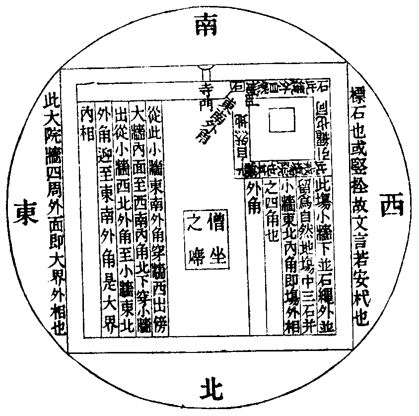

飾宗義記卷第八本
●說戒犍度
廣明十五種說戒者。先來破云。若唯略說。可言十五。今既其明心念等三。是故應言廣明三種說戒之法。義方周備也。
文言聽說義時不具說文句者。母論第六云。從脩多羅。乃至優波提舍。隨意所說。佛既聽說十二部經。比丘復疑。若欲次第具說文句。文多眾大。恐生疲厭。若略撰集好辭要義。不知如何。佛言。聽諸比丘。略引經中要言妙辭。直顯其義。
伽論半唄吉羅者。表義不周。名為半唄也。如有三偈歎佛三身。此中所言如來玅色身乃至無比不思議者。歎佛化身也。
如來色無盡智慧亦復然者。歎佛報身。若色若心皆無窮盡也。一切法常住者。歎佛法身。是一切法之所依正。常住湛然也。今時有人但作一偈。故名半唄也(一切准知)。
疏云第六若說法人多已下者。律文多作說法人少字也。蓋作少字者誤也。
五分十六云。白衣欲散華隨意。若落比丘頭及衣上。應拂去。落高座上無苦(餘如疏引)。
問所以結戒要待重請等者。謂律序中創請結說。諸戒緣起。舉過重請。而今說戒何不重請。即便制之。
先釋第二以是所說宗故者。疏雖已釋。更助令明。謂八章中第二章文云。諸大德。我今欲說波羅提木叉者。戒也。
疏云此是轉名釋也(處處解說者。諸有漏中。處處離繫。即是新雜論中。別別解脫也)。
文云。自攝持威儀住處。行根面首。集眾善法。三昧成就。疏云。此歎木叉生善滅惡有大功德也。前來轉名。顯防護義。由防護故。生善滅惡(戒是防護義也)。此之兩文。釋前章中。波羅提木叉戒之言也(疏云。故曰我今欲說等者。疏意引文。證能詮教。亦名木叉)。
文言。我今當說結當發起。演布開現。反復分別。疏云。正為比丘結說方軌也。
文言。是故諸大德我今當說戒。疏云。結說有益也。謂佛結其說戒方軌。令說戒師告眾當說。前來兩文釋前章中我今欲說之言也(次釋文者。總束疏意以為略義)。
自攝持威儀住處等者。守攝住持四儀之相。令離七非。而戒即是攝持所依。故云住處(疏云。由法如成者。由戒法而成也)。此之住處。即是行根。亦是面首。謂是集善定莊嚴之首。
道括下三者。次下疏中。自釋所結三法是也。
牒結違順者。牒四夷名。結云已說。復問清淨。名為順也。更云不者。名為違也(此釋戒文云。諸大德我已說四夷。乃至是中清淨不)。
下當廣釋者。如下雜犍度中有五法應和合。以配應來者來等三集也。瞻波等中亦釋此義。又此說戒中。初緣制集一處。結說戒堂。又因比丘在房中眠。制白攝眾。又因病比丘不來。制與欲等。並是集一處義也。此義亦如一。僧祇二十三云。一切露處坐。申手不相及。一切覆處。不得離見聞處。離者不名受具。(述曰)古來傳云。屏不離見聞。露不離申手。即此文也。
此就遠說障者。由戒不淨。即不發定。以無定故。聖道不生。故云遠也。
有中之行者。非空無相。斷惑之法也。
文言聽歌詠聲說戒者。稍引其聲。義同歌詠。五分不許。如章所引。故不同此律也。
文云。布薩日說戒者。舊名布薩。翻為淨住。淨三藏云。褒灑陀者。褒灑是長養義也。陀是淨義也。即是長深也。意明長養善法。淨除破戒之過也。
文中迦賓菟云我常第一清淨者。意云。本制說戒。意令離過。我既永斷破戒煩惱。故無勞往。五分十六。劫賓那是也。與此律同。若准祇二十七。尊者阿那律不來。諸比丘喚。答言。世尊說清淨是布薩。世間清淨者我即是。我不去。以是白佛。佛言。汝往喚來。莫用天眼。是長老失肉眼故。涉山險道。極苦乃倒。准此律文。即是罸不聽乘神足也。
准文中結說戒堂。初緣於自然界秉法也。
彼傳釋言者。即真諦了論疏也。
十七種別住者。束為頌曰。
了論偈云。及四摩失有五種(翻別住名。及釋義如章也。失謂過失。論自釋云。一破國土。謂王不許破國土地。結為別住。此結不成。二破僧伽藍。謂若先是淨住。或一切淨。或聞邊破。此三〔園〕以結別住。結亦不成。三〔園〕義如上離衣戒。三別住相。接為一相。謂兩界共以一石為相。兩邊〔各〕結。此亦不成。若共一山兩邊結成。由相大故。四別住半過本別住。謂相涉入。五以別住圍繞別住。謂不留自然地)。釋曰。別住有十七種(謂逐地形有十七異。安標相竟。先結布薩界。次結攝衣界鎮之。十七皆爾)。一長圓別住(中間狹長。兩頭形圓。相去一丈。或五尺地。周迊安石。以為標相)。二四角別住(形方四角)。三水波別住(地形細曲。如水細波)。四山別住(以山為限)。五巖別住(用一山巖以為齊限)。六半月別住(形如半月)。七自性別住(練若有山。或水為限)。八圍輪別住(先小別住。或三或四。外開一〔步〕二〔步〕為自然地。於外別結大界圍繞。如鐵圍山繞四天下)。九一門別住(一邊開門。猶如門巷。巷中之地。即是自然。若門穹過。便成兩界。但由不過。故號一門)。十方土別住(隨方土郭邑。併為一界)。十一四廂別住(屋頭相接。周迊四廂)。十二二繩別住(郭中結界。僧覓難知。或〔復〕不肯與欲。開以繩圍所欲結處。結處若欲作大小界。須安二標。若不結小。但須一相。繩繞二標。引出郭外。至半由旬。別作小界。亦以繩繞。還作二標。郭中僧盡集外界。先解不離衣界。次解顛狂界。次解尼布薩界。次解比丘布薩界。恐曾結故。先結小界。後結大界。郭內郭外。同時界起。界起除繩。若郭中集。郭外界裏亦須與欲。恐破法事。故須掘壞郭外界地。或種棘刺。不令僧入。二繩相連。因以為號)。十三比丘尼別住(為尼結故。又解。尼寄僧界。作羯磨時。須白比丘僧。聽方得。尼於僧界。若自結界。後若作法。不須復白)。十四優婆塞別住(僧為作羯磨結也。若無此結。優婆塞來此中受利。受八戒布薩。須取餘處優婆塞欲。若有此界。即不須也)。十五籬牆別住(以籬牆為齊限)。十六滿圓別住(形如鏡面也)。十七癲狂別住(癲狂比丘不可制錄。僧作羯磨。若不在眾。要在界中。若其出界。僧作羯磨。僧即得罪。故狂至處接〔界〕結。令作法時。狂在界中。真諦云。此不可解。此人在界。不與僧欲。云僧得罪。何容出界。反得罪耶。又界接不應〔故〕)。已上麤者並是論文。注並依彼疏義作也。
餘二小界者。難說戒生善也。難自恣滅惡也(難說結文云。大德僧聽。今有爾許比丘集。若僧時到。難恣結文云。大德僧聽。諸比丘座處已滿。齊如是比丘坐處。若僧時到)。立四大界名。章中太繁。應言人法二同界。法食二同界。法食別界。法別食同界好也。
受戒結小界者(難受戒結文云。大德僧聽。此僧集一處結小界。若僧時到)。
是非如常辨者。受戒事大意欲不用也。
十律優波問者。彼二十二。諸比丘於無僧坊聚落中。初作僧坊(等無優婆問之言也)。
祇律八樹間者。彼律第八云。五肘弓量。十弓種一菴波羅樹。齊七菴波羅樹。相去爾所羯磨者。名善作羯磨。雖異眾相見。無別眾罪。章云八樹者。蓋以此律衣界八樹。欲令會同。彼文既明。不得輙會。南山即以七樹計之。尺八為肘。弓有九尺。六尺為步。即一步半。七樹總有三十二弓。合有六十三步。不須依章中計也。三千步十里。六百步二里也。
一盤陀羅。五十尺四寸也。章云。令有三百五十二尺八寸者。三百尺為五十步。復以四十八尺。為八步餘。有四尺八寸也。
見論亦然者。彼第十七云。一切江河水不得結界。水中自然界者。若擲水若擲沙已外(此等水中唯是依自然集也)。
標寬界狹者。謂雖標寬。集僧容狹。以其自然與標差立。謂百里標。但七樹集。或十步標。而七樹集也。今詳。標寬界狹。計亦必須盡標集之。謂秉結法將成之時。標中有僧。理成別眾。礙法不起。猶如遮難礙戒不生之類也。
眾同之本者。制不別眾。名為眾同也。
不礙僧事者。既了分齊。便曉應集也。
文言當打犍槌者。章云此云打磬者。義言也。淨三藏云。梵云犍椎。此無正翻。以義為名。鳴槌打木。或犍椎者。所打木也。辨其形者。如擣練杵。長五六尺。輕鳴木位。盡餝兩頭。別為木棒。可長一尺。柄細頭麤。至鳴槌時。授事左手。於自面前。橫執長杵中間細處。右手執棒。向外打之(授事舊名維那也)。然其打法。創踈而輕。漸急而重。將欲了時。漸細漸沒。名為一通。如是至三。名曰三通。於最後通。聲沒之次。大打三下。或二或一。以表聲絕。其三二一。使令常定。勿數改之。疏云如威儀經說者。彼經下卷云。犍槌有五事。一常會。二旦食。三晝食。四暮投盤(蓋收盤器)。五一切非時。復有七法。(乃至)第七呼私兒(葢呼淨人小兒。而譯時胡語不正。筆受者謬抄)。南山雖引。而不能釋。又經云常會時者。先須從小稍至大大。擊二十下。稍小小復十下。大三下。此即同淨三藏說。今詳。永前不依彼經。而而立義云。初三下者。名警眾鍾。謂警徒眾整理衣服。次長打者。名引眾鍾。謂引眾赴也。覆生槌者。名靜眾鍾。赴集已嘿然靜坐也。鍾聲既絕。方為法事。昔西京東禪定寺。有僧名智興。每以慇懃淨心扣擊。後感鬼神遺絹三十疋。
打三通者。相傳釋云。從小至大。絕而復打三大下是也。准於長打之中。自具三通也。廣如南山僧圖辨。且為此法。實非教文也。
初文義四者。次下疏云。先加三義。故成四也。
結而後開者。結大界後。開戒場也。
除內地者。戒場之外。留自然地。由在大界內相之內。故名內地也。
此集十八十二者。此犍度上文中。有十八相。如彼文云。若空處若樹下若山若谷巖窟。尋彼文中。有十八个若字。是也。十二者。即此文云。東方有山稱山等。十二也。
三十秤者一秤十五斤。合四百五十斤也(纔可方圓三尺許)除漫石者。平漫小石也。
見論十七云。路界者。入田路。向井取水路。向河取水路。窮路。皆不得作界(章云乃至者。以隔入田等路故也)。窮路者。三步五步。其路即絕。是也。
蟻封者。吳地多饒。大者如塚。
十律二十八相者。彼云。若垣(垣牆也)。若林。若樹。若山。若石。若道。若河。若池。
水波別住等者。等取餘十六也。
義言自然界相應於圓取者。今為圖樣。以示未悟。今約六十三步為法也。南北通計。即有兩个六十三步。東西等各爾。

(前言三重標者。即戒場外相為一標。大界內相為一標。大界外相為一標。即合成三。章云。圓取七十三步。今為六十三步。謂僧坐處四面。去身。各六十三。兩邊通計即一百二十六步。即上朱圓是也。自此之外。雖有異僧。不破法事。然僧先集戒場結時。亦須四面各六十三。此圖且辨安置處所。勿謂即但爾集僧不可分聚。既此已明。餘蘭若等。各隨應准。若在空逈。圓取如前。若近他界。不須圓取。以其他界不須集故。章中雖遣先結大界。今時行事必先結小。不得依疏固執不改。後當更辨)。
五分母論皆先結戒場者。五分十六云。結戒壇已。更結僧坊界。母論第二云。結界法。先結小界。後結大界。五百問云。或先結大界。後結戒場。於中受戒如卑所云(羅什指[(白-日+田)/廾]摩羅叉也。此是羅什本事之師也)。恐無所獲。然云其先不知。同於未制。賴通此路。可有僥倖。(述曰)諸文既爾。必須先結戒場也。
正明唱相者。結戒塲法。雖在後文。及論行事。須先結小。故今且辨唱戒場相。先須集僧。坐戒場內。應一比丘性明了者。往往臨事。始復迴換。極不生善。應打木合掌立唱言。大德僧聽。我舊住比丘。為僧唱四方小戒場相。從此東南角石。南面東角。尋繩西下。至西南角石。西面南角。從此尋繩此下。至西北角石。北面西角。從東下。傍小牆內面。至東北內角。從此傍牆南下。至東南角石。東面南角。此是戒場外相一周說(三說。崇云一說。今且依舊。然戒場門。隨屈曲等。住情除之)。次作結戒場羯磨。如後文辨。次唱大界相。須僧集在大界標中。若老病者留在戒場。即是異界。不破法事。章云。先唱外相次唱內相。諸家皆爾。但南山云。先唱內相。理亦無在。然先唱外。其理稍長。標內是界。其相顯故。應云大德僧聽。我舊住比丘。為僧唱四方大界相。先唱外相。從此寺大院牆東南外角。傍牆西下。至大門東頰土外楞。隨屈曲出。至門東頰木內楞。尋門限內楞西。至門西頰木內楞。從此隨屈曲出。至門西頰土外楞。從此傍牆西下。至西南外角。從此傍牆北下。至西北外角。從此傍牆東下。至東北外角。從此傍牆南下。還至東南外角。此是大界外相。次唱內相。從此小牆東南外角。穿小牆西出。傍大院牆內面西。至西南內角。從此傍牆北出。穿小牆。至小牆西北外角。從此傍小牆東下。至小牆東北外角。從此傍牆南下。還至小牆東南外角。此是大界內相。此為內相。彼為外相。此是大界內外相一周說(三說。南山云。內相三周。外相三周。各各別唱亦得)。唱相之法。有門有巷。或諸屈曲。宜未唱前。僧共看之。為僧具說。如是諸相諸物既多。恐成雜亂。僧共籌宜各立名字。務在分明。令僧易識。又若牆外為界外相。唱至門時。除去屈曲者。此意慮恐作羯磨時。有僧至門。若不除去。即是界內。便成別眾也。儻取牆內。為外相者。至門亦須除去屈曲。慮恐夏中僧早出。門下待明。儻誤入中。即成界外。天明破夏也。又作法明病人與欲後遊門下。還復却來。既曾出界。便是失欲。僧法便破。故並須除。復有議言。取寺大牆外面為相。儻有比丘。來坐牆上。即是界內。恐破法事。故取大牆內面者好也。
白中四句者。一告眾勑聽。二牒因起。三作法時至勸眾詳忍。四舉其所作結成白辭。
恐濫為別者。濫為別人也(結界本為僧故)。
對二住處者。對食法二同界也(食法二同結文云。大德僧聽。如所說界相。若僧時到等。於此處彼處。結同一利養同一說戒。白如是)。
異界制同者。制喚戒場也。
所以可知者。叛說戒得罪。故制令喚。羯磨反此也。今詳。亦可說戒即含同一羯磨。羯磨不含同一說戒。此亦善通。後稱事難。若爾恐云何通。答如章。濫常恣者。濫十二月常須也。
稱事與欲者。且如與人作呵責羯磨。與欲人言。大德僧聽。我比丘某甲。呵責羯磨與欲。
先後不同者。結界之中。先言於此四方相內結大界。次方稱事云。同一說戒等。若與欲中。必先稱事云。為其因緣某僧事。次方云與欲清淨。此中意說。稱事結界在後。稱事與欲在與欲前。故不相類。今詳。說戒雖是稱事。和合之義。與餘法同。稱事與欲本心乖別。故簡餘法定不成就。又稱事與欲。但為一集。豈可亦令一度說戒一度結界耶。又稱事與欲。佛制得罪。豈可稱事結界佛制罪耶。
見論十七。水蕩成坑。如章所引。此門意辨。結界之地。為有無表相續起不。疏云今解不爾者。凡言無表。是身語業。豈得無情成就無表。若爾善見云何會釋。答此是制限之內。非謂後起。
如衣藥鉢等者。物體之上。雖無無表。其作法人身中亦起。持戒無無表。其作無表。結界亦爾。類此應知。
水蕩成坑窟樹等者。成坑如前已引。又見論十七云。若有石山。上廣下小。於上結界。若有比丘。在下不妨(此據當結界時。界依實地而起。故僧在下。非是界中)。又若結界已。水穿地為孔。不壞界相(謂不失界)。神通比丘在窟裏空中住。或在地下。不得別作法(空中計理。亦應無界。然由四面及以上下。實處是界。還是標中。故破法事。此即不同露地空中四面及上皆無界。故破法事)。若戒場上有大樹枝出界外。比丘在上。妨作法事。應喚下。若神足比丘在露地虗空中。不妨法事(若衣角拄地。應喚下)。章云高下等者。樹上為高。地下為下。窟裏空中或淺或深。文殊問經親撿無文。然五百問云。問大僧盡行。唯有沙彌在。界為在不。答但有一清信士。界便不壞。況復沙彌。盡無一宿界壞。(述曰。以問字同。遂疏主錯引也)。若准見論。即似不失者。前引文言。知其處所。竪柱為閣。即似曾經人絕也。
治故伽藍等者。下藥法文云。時諸比丘。不知何處是淨地。佛言應結。若疑先有淨地。應解然結。爾時比丘治故僧伽藍。不知為得作淨地不。佛言得作(已上具足謹依文字)。崇云。古舊諸師並皆錯用。下文疑有淨處。即無故言。有故言處。不知為得作淨地不。佛言得作。此當部文。尚自錯用。況他部文。而能具委。拾遺云。然正文中。疑有淨處。即無故言。廣說乃至佛言得作。既故令結。明界已無。如何妄引。證成不失。今詳。既云不知何處是淨地。明知此處曾已絕人。足顯故藍。何須局執。又故藍中比丘不知得作淨不。佛直判云。得作淨地。故知故藍之中。界法不失。以憑界法。方聽結淨故也(若言由有愚教〔得〕人。是故不知何處是淨者。何理得知彼宗釋正。我宗釋非)。更有別破。如破迷說。此不繁述。
法滅盡經云四僧事緣者。此辨戒場。理無自恣。
文言五比丘事起者。但據邊方受戒事也。然戒場法。如善見第八云。極小容二十一人。淨三藏云。其量纔可丈餘。若其更寬。集僧難故。本梵音云曼荼羅。譯為壇場。或云屈達里迦四磨。譯為小界。當今五天現製此法。方可丈餘。一丈之外。周迊壘塼。可二三重。寬四五尺。以石灰泥。擬充人坐。圍塼之外。接次壘塼。高二三丈。厚可尺五。作牆圍之。而於壇中安制底(此云聚相也。謂壘塼石以為高相也。即佛塔是也)。高一丈許。中安設利。即是其儀。其開門處。取便而作。上代僧祐律師。壘作方壇。事藍黃服。住住有人。衝習其法。事令屏除。恐為非法之序也。五分十六云。告諸比丘。聽將欲受戒者。著戒壇外眼見耳不聞處。請十眾在戒壇上。單白差教師往教。教竟應還。(述曰)准此。界外問遮難亦得也戒場無興不為無住處者。善見第八。問曰。何謂為難房。答曰。有勢力王。於他戒場立作。故名難房。應向住者言。莫於此作房。(乃至)故作不正。證至三猶不正。若眾多比丘有慚愧者。剔壞此房。唯置佛殿及菩提樹。(述曰)故知戒場無不為住也。
釋同大界者。前釋大界云。說戒具二。同謂同界異界。並制同故也。羯磨但有同界同。不制異界喚。故不須言同一羯磨。今結戒場既疑羯磨。所以不言同一羯磨也。
大界牒時到下文解之者。前結法中。時到已下。置其同一等言。今此解中。時到之前。牒同一等。准知戒場亦如此。
須解不須解者。通辨一切須解義也。
兩卷羯磨者。古羯磨本。題云三藏法師集者。是也。
初文有四者。一結法食二同。二結同食別。三結法別食同。四舉初二同。解為二別(謂舉初法食二同界。今欲解為法食〔三〕別也)須結意等者。等取釋名也。且須意者。一處有食無說戒師。一有戒師而無有食。兩處相須。故結二同也。
釋名者。共法共食。名曰二同。餘類此釋。文亦有四者。大科既四。今是子科。四數既同。故云亦也。
結法亦四等者。前結大界。科為四文。一差唱相人。二正唱相。三差秉法人。四正秉法。今此亦爾。同前以說者。一舉昔為二別。二顯欲今同等如前。
文言守護住處者。作法之時。欲得不集也。
次下二結類亦應爾者。謂法同食別。及法別食同。類初法食二同。亦應解為二別。而文略無解法也。
其文亦四者。一舉初二同。二時諸比丘下顯欲今別。三佛言已下解前昔同。四隨彼已下開今別結。因辨結竊尋古來行事之家。藍大界小及一寺中。結多界者。從置食界取食將至界外藍。內及至寺中別界之內。皆言犯盜。今詳不然。事緣一寺。義同一家。豈由界隔。便為局礙。且如食同法界者。不解舊界。直結食同。故知不由界體局食。而論法同食別界者。須解舊界。更結法同。故知結界本意。為法不為食也。以此推求。故知不犯。若言決定界局食者。儻有兩寺。同結一界。即應食通。若許通者。反招盜罪。
此或可爾者。今詳不然。理應開其如法四人。密出界外。疾疾結之。論其集僧。還依常則也。若其多人一時俱去。惡人便覺故也。
觸不成觸等者。等取惡心解他淨地。不成解淨也。惡止觸食。不成惡觸。不知標處。遮不成遮(今取不成為同喻。若將惡心為同喻者。應許界內惡心遮說。不成遮耶)。
減却一法寄下遮中者。下遮犍度。聞有異界喜鬪比丘。欲來至此。佛開減作二三布薩。若應十五日說戒。減位十四日。若應十四。減作十三。若今日來。應疾布薩。若已入界。應具洗浴令其洗浴。舊住比丘。密出界外。作布薩事。若不爾者。佛開却作布薩。應作單白。從白月至黑月。若待不去。作第二白。若故待不去。應知法強與和合。
大小分別可知。十四日是小。十五日為大。
須作二數法者。上久黑月數法染使黑。白月數法染使白也。祇律二十七。如章所言。若有者香汁灑地等者。謂若有客皆比丘也。
具戒位三者。僧位誦戒。眾多及一人。並不誦戒。章中不分其相也。
僧中四別。誦十人二十人四人五人也。
心念等。但得名布薩。不得名說戒也(章中不分別)。
故唯單白者。以制作故。事是易和。單白即得也。
自恣亦爾者。僧恣差人三說名廣。再說一說名之為略。四人已下唯對手恣。更不論略也。
不依前准者。不須准前四門中辨也。
章云一一如常可知。又下云廢立可知者。應先鳴鍾。人人各說聞鐘偈。如增一含二十三云。降伏魔力怨。除結無有餘。露地擊犍椎。比丘聞當集。諸欲聞法人。度流生死海。聞此妙響音。盡當運集此。次諸比丘攝持威儀。徐步進堂。禮佛恭敬。胡跪合掌。口說偈言。持戒清淨如滿月。身口皎潔無瑕穢。大眾和合無違諍。爾乃可得同布薩。說此偈已。依次端坐。然其堂中。先須灑掃。及敷淨席。香爐籌案。高座燈燭。肅然可觀。著一年少。擬令秉白。又令三五年少比丘。或復沙彌。助辦所須。各具威儀。無令雜亂。維那先取淨水澡手。付與餘人。令行與僧。受淨水時。各說偈言。八功德水淨諸塵。灌掌去塔心無染。執持禁戒無缺犯。一切眾生亦如是。應一人執淨巾。左手執上。右手持下。授與眾僧。後香湯巾亦爾。維那又以香湯洗手。次持香水。至上座前。灌上座掌。付籌令浴。各說偈言。羅漢聖僧集。凡夫眾和合。香湯浴淨籌。布薩度眾生。若上座不能浴者。維那自浴籌已。餘有香水。令餘人行與僧。僧受香湯。各說偈言。香水熏沐浴諸垢。法身具足五分充。般若圓照解脫滿。眾生同會法界融。行巾准上。然水及湯本擬灌掌。勿用漱口。其維那浴籌既竟。至打靜槌邊。左手執籌。右手捉槌。其柄亦須先用淨香二水浴之令淨。打一下。口唱云。大德僧聽。眾中誰小。小者收護(三說。收攝金護。故云然也。又云)。并供養收籌(准前收護。已具其義。行來既久。故不廢之)。又打一下。唱云。大德僧聽。外清淨大沙門入(三說。有言。此是喚賓頭盧。然准律中。怨人不應集。及喚戒場上僧。不局賢聖)。有人此中更加一白。未受具戒者出。四分戒序。戒師自駈。不勞維那。妄令先出。若或有人誦餘部戒。維那駈出。斯即不爽。以餘部戒本無駈出文。故須維那先白駈出。又有人言。不清淨者出。此亦然。戒本文中自有三問故也。又打靜云。大德僧聽。眾中小者已收護。外清淨大沙門已入。內外寂靜無諸難事。堪可行籌。廣作布薩。僧當一心念作布薩。我比丘某甲。為布薩故行籌。願上中下坐。各次第如法籌(如法受籌之言。三說)。并受囑授人籌。作此唱已。來至僧前。從上次第。胡跪授之。上座亦即偏袒右肩。胡跪合掌。餘僧一時隨上坐儀式。然取籌時。捉籌頂戴。各說偈言。金剛無礙解脫籌。難得難遇如金果。我今頂戴歡喜受。一切眾生亦如是。後收籌人。隨至僧前。胡跪承接。其還籌者。以手還籌。口說偈言。具足清淨受此籌。具足清淨還此籌。堅固喜捨無缺犯。一切眾生亦如是。既還籌訖。恐久疲極。各聽復坐。如是展轉。盡於大僧。既收得籌。至上座所。胡跪授與。令上座數。祇三十四云。香湯洗舍羅已。行應一人行。一人收。不得覆頭覆肩行籌。應脫革屣。偏袒右肩。受籌人亦如是。先行具足人籌。然後行沙彌等。行已應白。爾許受具足人。爾許沙彌。令有爾許人。五分十六云。不知誰行。佛言。使下座比丘行。若不知行。應取知者。有比丘便擲籌與僧。佛言。應手授。收已不數。數已不唱。佛言。收已應數。數已應唱。唱云比丘若干。沙彌若干。出家合若干。維那復打靜云。大德僧聽。次行沙彌籌(三說。巡僧遍行。口唱云沙彌籌。恐有大僧受沙彌囑。故須遍行)。行收既訖。還付數知。維那自來。胡跪取數。上坐告知。復還打靜。唱言。大德僧聽。此一住處一布薩。大僧若干人。沙彌若干人。都合若干人。清淨出家和合布薩。上順佛教。中報四恩。下為含識。各誦經中清淨玅偈。偈云。清淨如滿月。清淨得布薩。身口業清淨。是乃應布薩(出祗律二十六卷)。維那次來至上座前禮。胡跪合掌。請云。今白月十五日。眾僧和合。大德慈悲。為眾誦戒。上座答云好。維那即唱。唱法如常。若不堪者。告云。此說戒事。某甲應作。但為老病。氣力不堪。應請次座。維那次第請二三人。若並辭者。還上座前。白言。次座已下並辭不堪。取上座進止。上座告言。任差能者。維那還打靜云。大德僧聽。僧差律師某甲。為眾誦戒。梵音某甲。律師昇高座。受請者禮佛已。胡跪白言。比丘某甲稽首和南。敬白大眾。僧差誦戒。恐有錯誤。願同誦者指授。一禮便起。徐徐昇座。次為梵唄。如常可知。次誦戒人。駈沙彌出。沙彌對僧。說十數竟。還房作業。不勞諸師浪[拚-ㄙ+ㄊ]異端。祇二十三。因有賊住。便以十數。試驗是非。十數者。即是十種增數法門。亦無次第也。
所言欲者悕須之名者。不然。此中欲者。欲樂忍可也。故伽論云。樂隨喜共同也。梵云闡陀阿路者耶弭(闡陀此云欲也。阿路者。此云說也。耶弭。此云我也。謂我說欲也)。謂作法時。樂欲忍可也。梵云伊(上聲呼之)。此云欲也。此即悕須之欲也。梵云迦(去聲呼之)摩。此云欲也。此五欲之欲也。梵音各別。其義亦殊也。然所應法。其唯百四十四。或有疏云。其唯百一。今詳。百四十四者。意說結界無欲法故也。此義不然。疏主羯磨疏中。自列一百四十五番羯磨。於中結界大小成八。何因但除一番羯磨。故應說言。然所應法。其唯百三十六也。上下疏文。數有此失。准此應知。又更義推。行覆藏六夜時。容來白者。理不集僧。若布薩時白。及六夜時。日日白僧。理亦應須索欲問和。此白雖非羯磨法攝。然亦須欲也。
已下二位無欲法者。謂對首心念二位也。
淨恣二局者。說戒不得與自恣。自恣不得與清淨也。
謂前二僧所秉當行者。說恣二法。佛制常行也。
隨其前事要有所須者。隨其說恣。乃至六年杖囊等。一切法事。有須作者。皆開與欲也。
若須不須並是義兼開制者。謂於須中及不須中。並開與欲。及制不與欲也(不與欲犯提故)。
若破戒等事咸悉不成者。前人自犯妄語。然僧作法得成。由前人心不違僧故也(其理決然)。
各對五說者。說戒與恣。恣與清淨。並不成也。
亦非二十三人僧尼五說足不足故者。謂前既言二具非下三。理應僧尼並成能與。何故今言二十三耶。以其二十三中。尼等四眾並在其數。是則准僧。是能與人。豈不違前二具皆成能與也。故今釋云。前言二具。意說當眾。今言二十三者。其中尼眾聖僧不足。故非能與。尼作法時。反此應說。故云五說也。
但二十三除別住等五者。意說之數。除二十八。今與欲中。但二十三。體非能與也。尼等四眾。是異眾故。舉擯五人。及十三難。體非僧故。所為人者。自身至僧。明非能與。由斯約體。並非能與。其別住等。體是淨僧。是故約體。並成能與。於中差別有其三類。一者神足於場儻來入界。即成能與。二者隱沒離見聞。定成能與。三者別住。若申手外。定成能與。若在界外。容來入界。而成能與也。尋疏審觀。足曉斯意。下瞻波中。二十八人。體不足數。束為頌曰。餘舉滅難為(即二十三也)。神隱離別場(此五兼上即二十八)。
四僧階差相望有攝者。此有二義。一據相辨義者。上能辦下。是故二十人僧具攝四僧之欲。十人僧中攝三僧欲。五人四人准此應知。下不辦上。是故四人攝淨。不攝恣等。五人攝恣受。不攝出罪等。十人唯攝受。不攝出罪。二十唯攝出罪。第二據用分別者。二十有出罪之用。以恣受等不假此故。十有受戒之用。以說恣等不假此故。五人四人准此應知。由此義故。望有邊說之為攝。望不假邊說為不攝也。二十七人。頌曰。命過餘行罷。入外道別部。戒場明相出。難舉滅神聞。章云餘專約人者。二十人也。頌曰。命罷難舉滅(舉分三舉)。足數約體者。有人言。此釋不然。若不自言者。與欲足數。皆得成就。若自言者。不成足欲。今詳。足數約體。理決應爾。以體不淨。和合之義不生故也(數有此言。宜還依舊)如道遠結界等者。意難古師。離與欲人。見開即失。故今難言。如上文中。道遠結界。十五日布薩。十四日先往。不得受欲者。但以下文云。更無方便可得宿受欲。故上文云。不得受欲。儻若不宿。理亦聽與。既遠與欲。明知已離與欲之人見聞之外。故不得言離與欲人見聞即失。古師作不送欲意離見聞失者。彼又解。離見聞有四種。一隱沒。二到出。三隔障。四遠坐。初受時離病人見聞。至中路離同伴見聞。此二但有隱沒一種。至僧中時。具有四種(後文云。若至中道。若至僧中。亦如是。隨配應知)。今師若以神足為難。理恐不然。神足異界。故不問心。今離見聞。不妨同界。何得相類。然詳此釋。亦有斯理。今師正解。如疏應知。崇云。離見聞者。唯局與時。語受不得離見聞故。中道僧中。設離常道。欲亦不失。持欲既是使命往來。豈可離道即今失欲。若爾何故文言亦如是。答理實合除。且總望前。故言亦如是。又解。三位皆對受明。初受既爾。中道僧中。類亦如是。省過順文。此釋[宋-木+取]勝。古師言離見聞有四者。亦不然。今詳。若常道逕過諸處決定失欲。如上食前食後詣餘家戒云。若比丘囑授欲詣村。而中道還。或不至所囑處。乃更詣餘家。或囑至白衣家。乃至庫藏處。及聚落邊房。若尼藍中。或即白衣家還出。並失前囑授。應更囑授。囑授小事。尚此多失。況今持欲。寧得逕而離常道也。律攝之中。登雙踏道。尚自失欲。故知甚難(登雙者。越登兩級也)。
一成二不成。下文云。有三種狂癡。一者說戒時憶不憶成不。二者憶說戒而來。三者不憶說戒不來(初三不成持欲。第二成。疏主是義准釋也)。
二十一人此彼俱同者。頌曰。場難舉滅神及聞(七言也)式叉等二者。等取沙彌尼也。
別住等二者。等取隱沒也。
休道可知者。准同命終(謂若來集。即非休道。若是休道。即無集義)。
入外道等二者。等取入別部也(由不據往來故。若其來集。即非入道等也)一解此謂覆鄣處作法者。即是隔障隱沒也。
一准前說者。文還為四(初至如是善)。病輕與欲(次不能下)。扶將赴集(次時諸下)。病增圍遶(次若有下)。病多出界。初文復三。初有緣須集。次時有已下舉緣啟佛。三佛言下開與清淨。於中復三。初與成不成。次持成不成。三說成不成。與中復三。初聞與。二若說下列其五種。三若不下反上不成。
僧家所作者。意說清淨。應僧常行。亦非稱事。祇二十七云。布薩時。與欲者多。集者少。又與欲比丘與集者等。白佛。佛言。意從今不能與欲者多及等。作布薩者越。應集者多表無別過者。如前已引祇律覆處不離見聞等也。
文云第二比丘代說者。若准五分十九。若忘應傍人授。三忘應更差人續次誦。然祇二十七云。誦時忘者。餘人得授。若令誦作布薩越。不同五分及此律也。彼律又云。從今日後。不能逆誦。若誦時忘失者。得還補。逆誦者越(謂故作心逆者越)。又云。轉與欲不名與欲。不同此律也。若准母論第八云。七相應法者。取欲者語一人。如是展轉語第七人。皆得所欲。取欲清淨。是名七相應法。准此轉欲得至第七。祇律又云。布薩日若黑風雨。若火若賊。諸比丘盡驚散。不名持欲到僧中。若一人在。是名到僧。
廣而直說者。意簡為我說欲等四也。
不即破夏者。相傳云不然。理應破夏。不同欲法也。
七个餘緣者。又中前四各有若字。後三各有或字(然覆不〔同〕有兩是難。無兩非難。故合為一也)。
文云布薩多夜已久者。謂有罪者半月懺悔。增長戒根。懺罪既多。故夜已久。准下自恣法云。若布施夜過多。相傳釋言。謂施主施時。為呪願多。今詳。如五分十九云。若說法論議。若多偈布施。不容說戒。皆聽至明日布薩。與此律意同也。
偏舉下四者。前七个餘。統中下之四種。並是夜久。恐犯經宿。即須略說也。
廣誦戒毗尼者。一卷戒也。五分十六。五種說戒。序至三十捨墮已。言餘僧所常聞(餘如章中。言不同者。彼但一五。此有三五。此律初五中第三。誦至十三。彼律第三誦至二不定也)。
尼但二五者。一序。二至八事。三至十七殘。四至三十五單提。第二五至八提舍尼。准知。
若更誦本語越者。祇二十七云。諸比丘作布薩時。說至波逸提。截己破已挽出已。波逸提。當誦時賊成。誦人嘿然。賊立須臾便出。復重誦。如是至三。賊作是念。此惡沙門作是說。正當截我破我挽我等耳。便入打諸比丘。佛言。若更誦本語越。五分十八云。聽諸比丘。遙與作狂白二羯磨(本為不集故應遙作)。
有心乞領者不解等者。猶是古師義也。
如離衣六年。即不須解。捨戒即是有心而解也。無心之中。如滅擯法。闡陀二白諸諫等。亦不須解。七法治人等須解也。
類前難提者。學悔不得重作也。
文言眾有不淨乃至無有此理也者。五分二十八。十律三十三并云。佛若不清淨眾中說戒者。頭破七分。祇二十七。闍王作布薩堂。種種嚴飾。作金蓮華鍱。僧坐後等。略如章別。今詳。此中制自言治。與下僧八。八種惡馬。并三十八奇。並是連環。同是一事。即此比丘當時即作惡馬治也。
然結集者。集之不次也(准此惡馬治人准是犯重之者。古人浪釋。下當更辨)。
文言其人及所詣處非者。其人者伴也。舉伴以取處非。故置及言也。亦有律文。具足八句。怛鉢那。或為歎波那。此云乳粥。音義云。此云麨也。
懺悔發露法者。識者懺。疑者發也。
所作事業雖謝在往者。加行已息也。
立對治道者。即以懺法為能治道也。
興善罸惡稱之為懺等者。今三藏云。梵云痾鉢底鉢喇底提舍那。痾鉢底者。此之罪過也。鉢喇底提舍那。即是對他說也。說己之非。冀令清淨。舊云懺悔。非關說罪。懺摩西音。此當忍義。悔是東語。追悔為名。悔之與忍。逈不相干。若依梵本。諸除罪時。應云至心說罪。西國若有身誤相觸。大者垂手撫身。小者虔恭執[跳-兆+專]。口云懺摩。意是請忍。願勿嗔責。律中就他致謝。即說懺摩之言。必若自己陳罪。乃云提舍那矣。雖可習倍久歲。而事須依梵本。今詳。名言通得意之路意。既無求滅罪。亦可義通也。
現生後三報等者。婆沙百一十四。廣釋其相。一者順現法受業(舊名現報業)。謂若業此生造作增長。則於此生。受異熟果。是名順現法受業。二者順次生受業(舊名生報業)。謂若業此生造作增長。於第二生。受異熟果。是名順次生受業。三者順後次受業(舊名後報業)。謂若業此生造作增長。隨第三生或第四。或復過此。受異熟果。是名順後次受業。問諸順現法受業。定於現法受耶。順生順後。為問亦爾。譬喻者說。此不決定。以一切業皆可轉故。乃至無間業亦可轉。彼作是說。諸順現法受業不定。於現法中。受異熟果。若受者定。定於現法非餘。故名順現法受業。順生順後所說亦爾。阿毗達摩諸論師言。諸順現法受業。定於現法中。受異熟果。故名順現法受業(餘二亦爾)。更有三釋。皆顯有不定義。恐繁不錄。今此章中。同譬喻論師釋也。
言時定者。若受決於三時隨應。故名時定。
報不定者。未受之間。容可改易故也。
必感善報亦在至時者。即生報也。
薩婆多性有成就者。成就即是得之異名。不相應行以之為體。謂此惡業若表無表。常起得得。成就在身也。
曇無德為因成就者。成論宗中。得無實體。亦許假說。然無表性。即是實有善惡無表。是罪福性。必有實體。如彼論第九無作品。廣成立也。斥似大乘熏成種子義也。
懺是有中之業者。謂非無滿空慧永斷煩惱也。
解則不爾者。如有漏慧。九地別斷。一一地中。分為九品。下解是劣。上惑是麤。麤故易斷。還用劣道。以無漏慧。斷九地中修道煩惱。義亦同爾。餘八品廣說應知。
微惑曀理深者。[宋-木+取]微者即是下下品惑也。
大乘實相等者。即真如觀也(此以觀行滅也)。或能決心發露。即是依大乘事中滅也。
是以論云者。即十住毗婆沙第四卷也(三三者。身等三業三報。及自作教他隨喜也)。准十住毗婆沙。但有五門。謂今晨朝十方無量佛所知無不盡等。是也。今時加發願者。計理即上隨喜迴向。已成發願。無勞更作也。
即懺文中有之者。如言發露諸黑惡。及決定毗尼經。禮三十五佛懺云。所作眾罪不自覺知等。是也。
對大具五者。一偏露。二脫履。三向禮。四[跳-兆+互]跪。五合掌也。
下當具說者。次下釋文即明也。
多身修道者。謂佛要經三無數劫。積集萬行也。
一形交證者。謂據一形容從見道。至證極果。不同大乘第二僧祇即入見道。然聲聞極少。猶逕三生。第一生中種解脫分善根。第二生中令其成就。或起順決擇分。第三生中能入見道。或至盡漏。諸到究竟聲聞。如舍利子等。六十劫修也(如上初卷記辨)。
及以蘭等咸同此法者。多論第九云。四悔過法。一說悔過。此云三說。故知不是。提舍已下亦可部別。不得將多論釋此也。
五分白二差者。但欲辨其不同。然自此律。但口差二三人。諸比丘懺也。
第二說戒時作白懺悔發露者。謂識者懺悔。疑者發露也。就識中。有古師云。此懺罪滅。今者准文。白已當懺。蓋謂後時當懺悔也。今三藏律攝中。令後懺悔也。又此白法。眾僧都集。無與欲者。人須同犯。除去四夷。了了識相。方可作白。若有與欲。與欲之人必言清淨。若信清淨。僧應就懺。不合作白。不信者須喚須舉。以其有犯。不合同說。不得妄白。今有時人。罪離疑忘。與欲非一。共行此白。望得滅罪。甚為非理也。
定知己等有罪者。餘僧也。
事等無罪者。且據於有一向謂無。作此初釋也。若望謂輕。或復及此。亦是不識。如疏後解。
不識罪名者。章中釋意。如燃火等。自雖了知有燃火事。而心一向謂為無罪。或心一向謂是吉羅。故章釋云不知何罪。或有壞地等者。且如生地而露燃者。亦即壞地。又壞生種。容有自煑。而彼迷心。云我犯燃。何處更別有壞地等。是不識名也。
體狀者。表無表體。或性遮等也。
多小者。即迷自體頭數多少。及此從生覆藏嘿妄等也。今詳。亦可不識名者。於有謂無。或輕謂重。
不識相者。如犯屏聽。自謂兩舌。假根謗他。謂為無根。與女同宿。謂為未具同宿等。是也(章中所釋恐不當理)。
彼據無諍者。指戒本中。強與波利婆沙。為伏難也。釋意云。雖身心自懺。但望出罪。不肯行覆。故須強與。
說戒日同不同等者。日同容來。
界裏藍外者。意說界大藍小故也。
應從不從者。且如舊比丘十五日。客比丘十四日。十四日客來少或等。制從舊人十五日說也。
正以知來為異者。謂知決來。然而不待。速作說戒。不同第二十二正說之時總然來也。
三个十二中初十二。頌曰。十四客少等。制從舊十五。客多求舊和。不和出界說(初三句〔意〕)。十五客少等。求舊十四和。不和亦出界。客多舊從客(第二三竟)。客十六舊時(時謂十五日也。此中即有三句。文中現有。然章中名〔作〕三誤也。以其此三。客若少等。須制從舊。理合同前初三句故)。客時舊十六(此三文略)。如次同前說。此初十二竟。客少告清淨。等多更為說。舊三同客三。各望六亦爾(此第二十二竟)。知來十二句。同於中十二(合三十六句竟)。五分有文。五分十六云。客比丘十四日。舊比丘十五日。佛言。客應從舊。無舊比丘。若客比丘自共作異。佛言。後來應從先至。有客比丘一時來。佛言。應問近處比丘。無近處無比丘。應問官日數從之(黑月問官。理在不〔或〕若論白月。理應十五日為定)。
祇不聽再說戒者。祇二十七云。佛言。今從日後。一住處不得再作布薩。若比丘遠行入聚落。作布薩已。得嘿去。應囑沙彌若園民若放牧者。今知此中已作布薩。若無人者。應書柱戶扇。若散華作相。若前人不囑不作相。後人不問不求相。俱得越毗尼(十誦二十二。五分十六等。皆令更說。勿使局執祇文)。
亦不得頻日者。彼無文也。
但初四个三者。指初十二句也。
應出不出者。諸求和句中。不得和合。應出界故也。
不從不集者。如十四日客若少若等。而不肯從十五日應。故名不集。餘句類知。
秉法惡心等者。知人不集。起破壞心。故秉得蘭。若無破壞之心。但由慢緣故吉。計理餘人不集懈怠亦吉。
文言破壞他者。欲使他犯別眾。亦欲令僧不和合也。
餘悉同此者。餘三个十句。悉同前故。此等句法。先讀律文。即知其相也。
無比丘無住處者。逈地也。無比丘有住處者。空藍也。
有比丘無住者。逈處有僧也(諸合句者。兩處俱主是臣也。或破藍亦是也)。五分十六。諸比丘反抄衣。或叉腰著革屣覆頭。或臥或倚。作如是等不恭敬聽說戒。佛言。宜加恭敬。不者吉羅。有比丘說戒上眼。佛言吉。
第七簡餘眾者。文言瓶沙王遣諸將守藍者。五分十六云。優陀延王有一夫人。王放出家。得阿那含。生梵天上。飛來空中。勸王出家。即釋王位。付太子已。出家學道。在城左右。止林樹下。太子見文。恒恐還奪。時王比丘未曾見佛。欲往禮敬。念已便行。遂忘坐具。須臾還取。子王見還。恐其將悔。勅人速煞。凡是沙門釋子亦盡煞之。使受王命。王比丘言。我出家所求。未有所獲。汝小寬我。使者聽之。即懃思惟。得須陀洹。如是四反。得四沙門果。便語使者。汝可隨意。還語汝王。我不貪位。行忘坐具。所以暫還。汝為煞我。便是殺父。煞阿羅漢。念汝長夜受大苦耳。言已就死。使還白知。王聞此語。血從口出。生身入大地獄。時瓶沙王。與其隣國。先聞其教。盡殺沙門。入己界勅人守護。祇亦不許王前說戒。如前賊中說。十誦五十云。頗有未受大戒前。得說戒不耶。佛言有。我先說除却波斯匿王眷屬。猶為王說。令心清淨故。
第二大段非時和合者。文中兩白。疏主羯磨疏中。前白名為非時和合白。後白名為非時說戒白也。此中疏意云。初明單白和僧者。非時和合白也。此白意者。約僧為彼解舉已了。故須作此和合單白。及須說戒。此說戒時。即用常白而說戒也。尋疏應知。次釋後白。如疏云。或被舉人別分。不同僧法(有疏本云。別人不聞僧法者誤也)。此下疏意云。此約被舉之人。欲得與僧同共法事。故直與作文中後白及說戒也。此說戒時。即用此白。替常說之白也。下拘睒彌疏中云。或可布薩白及布薩。此之二法科行一事者。布薩即是非時和合白也。及布薩者。即以非時說戒白。而作布薩也。二法之中。科作一事。不勞俱用兩个非時之白也。此中疏意。人多致惑。不尋羯磨疏者。難曉其意耳。然文中優波離問言。為成如法和合不。闕無答文。准下拘睒中答云。佛言不得如法和合已下文。方同此處也。
七文者。一說戒如非法。二與欲清淨法。三廣略說戒法。四治人滅罪法。五客舊應不法。六制叛說戒法。七料簡餘眾法。
●安居犍度
疏本第八
昔言。形心寧靜曰安。要期此住曰居。瑤云。若爾心若不靜。應不成安。故不存之也(今詳就勝理亦何爽)。
以成三益者。一靜思專脩。二順於慈道。三息世譏論。不逮。逮及也。
五事賞勞亦得兩月六月利不者。有古師云。五月攝閏以下。文言。聽冬四月竟。僧應出功德衣。既約冬時。故知含閏。若論一月局開夏知。故不舍閏。疏中不存此釋。故云今且一釋等。如疏應知。
既知含閏等者。自下疏中。總約一夏。分為三類。第一類者。如疏云。閏五月六月百二十日住(閏此兩月。一向決定百二十日)。第二類者。如疏云。閏四月。結位有三(一者前四月結。定百二十日。二者後四月結。隨日多〔水〕三者五月內決。定九十日。尋疏應知。疏云。是中或有安居隔一日等者。重分別前第二位也)。第三類者。如疏云。若對閏七月。結位有五(謂前第二類中。已閏三位。今第三類。復開二位。故五也)。又有疏本云。若對閏七月。結位有二(此即直就第三類中開二位也。一者五月一日已前結者。定九十日。謂至閏七月一日去也。二者疏云二日已後十四人結者。誤也。應言十五人也。從二日至十六日。有十五日故也。且如五月二日結者。至閏七月一日。雖滿九十日。而閏中日不數為數。要至八月一日。方為定數。由此定百二十日也。餘可知)。疏云。或安居隔一日。去時隔一月。乃至安居隔十四日。去時隔一月等可知者。重分別前第三類義也。謂五月一日結。與五月二日結者。雖隔一日。而乃前人。閏七月一日即得去。第二人。八月二日方得去也。故云去時隔一月。乃至安居隔十四日。去時隔一月者。此言亦誤也。應言安居隔十五日也。謂五月一日結者。與五月十六日結者。隔十五日也。去時隔一月者。此言至閏七月一日即得去。亦誤也。謂五月一日結者。五月十六日結者。至八月十六日方得去。此乃去時隔可五日。何得名為隔一月也(若欲救之。應言並隔閏月之一月也)。上來疏義廣已辨訖。若准伽論第三云。王作閏月。數安居日滿。自恣已受迦絺那衣。(述曰)此即數日滿九十日。今詳。若爾迦提亦應受兩月。故不應然。又功德衣豈容六月。冬中有閏。應亦六月。既有多妨。故彼部義不可輙依也。淨三藏亦同此論。三藏又云。必須夏終。十四日夜。請一經師。昇座誦經。廣為供養。明朝過午。各取鮮茅。可一把許。手執足蹈。作隨意事(舊名自摩事也)。隨意既訖。任各東西。即是夏周。無勞更宿(此即十五日去。亦與舊異也)文證可知者。即此揵度下文云。舍利弗目連欲共世尊安居。十五日從所住處往。十七日乃至。不知云何。佛言。聽後安居。有二安居。有前安居後安居。以三十日六十日。並是結時分故者。今詳。細辨有三十一日六十一日也。
不同祇律者。彼律第二十七。未至住處。路側安居者。謂彼律中不結安居。犯越毗尼。故且權結也(有緣開破。故明相出趣所住處)。
破亦不得衣利者。非直破夏。亦復不得時僧得物也。
又見論五月十六日為前安居等者。彼論第十七云。胡本律。五月十六日為前安居。六月十六日後安居。疏中釋意云。此國改法。應隨王法。四月為夏也。立世阿毗曇云。若五月十六日。西國始結夏。漢地安居以滿一月。至八月十五日。西國自恣時。漢地已受迦絺那衣一月。有古人言。我觀此律。結安居法。唯有前後兩日得成。若爾何故增三文云。有三種安居。前安居。中安居。後安居。答云。彼續次文云。於聖法律中。歌戲猶如咲儛如狂者。戲咲似小兒。觀此文勢。靜緣正念。名曰安居。初心觀歌。中儛。後戲。故云三安。非謂九旬安居法也。今亦有人。扶此曲見。今詳。此乃迂會明文。妄通己見。以觀歌等。無有前中後安相故。如增一等。以攝僧等。一一為數。乃至正法久住。增二三等。此觀歌等。何以不准汙家惡行。歌儛跛行彈皷簧等。作多種數。立安居。何限三也。五百問云。問夏中幾日得結坐。答從四月十六日。盡五月十五日。日日可結。然尋四分律本。元興于闐龜茲國中。卑摩羅叉。是龜茲人。依斯律本。故作此說也。又若會同他部律者。何成諸部各有自宗也。故定不然。淨三藏云。若前安居。謂五月中黑月一日。後安居者。謂六月中黑月一日。准斯兩日。合作安居。於此中間。文無許處。至八月半。是前夏了。至九月半。後夏方終。今詳。三藏且執自宗。何用總判。文無間處。又移夏言。此彼界僧破者。此下文云。比丘安居竟。見者比丘方便欲破僧。自念言。破僧事重。甚為醜惡。莫為我故破僧。佛言。若如是者。即應以此事去。若安居竟。聞彼界有欲破僧(廣說准知)。祇第八云。從今祇桓林至開眼林。東坊精舍。西坊精舍。東林精舍。西林精舍。王園精舍。受籌塔婆羅林精舍(婆羅林。疏中更加門字者非也)。
問自然安居得結界不等者。疏中且是古來共傳。所以不聽夏中解結。今更詳之。此應分別。謂下迦絺那犍度云。安居竟四事應作。及增五文云。應作五事者。此意本為舍利弗。欲益親里。及近世尊。佛即開聽王園精舍。及那羅聚落。連結大界及攝衣界。安居既竟。界若常然。若須集僧。事多妨難。為對此義。所以文言。安居竟應解結等。若無此緣。本可藍相。而結界者。夏中解結。何所差違。崇云。夏中解結。並不破夏。未竟解結。得不應罪。今詳。為解身子界者。何得不破。故非盡理。又詳。結安理由本意。若本標心。但依藍相解即不破。以其安居二界皆成。教不遮故。又自然中標心局限。以為分齊。不同集僧空聚等分。既知此理。若本標心依藍相結。縱入戒場。及以藍中大界小界。並不障往來。但不得出藍相之外。護衣之法。亦各不同。謂有衣界。即不得入戒場之中。若無衣界。依藍相護。應各別明。不應一概判衣夏等。應審思之。
何等人須安居謂五眾者。沙彌安居。但稱長老。餘詞悉同。餘下二眾。全同大尼。
不同俗年者。且如俗中。臘月三十日生。至明年正月一日。即名兩歲。比丘夏法要滿九旬。方名一歲也。
亦可四者為七者。或二或三或四。並如疏中自己廣釋。所言七者。即於第四及界之中。曲開為四。故成七也。開為四者。一脚及園。雙脚及園。并入界二。即是四也。
五分具列威儀者。彼律十七云。應偏袒右肩。脫革屣。胡跪合掌。向一比丘言。長老一心念。我某甲於此住處夏安居。前三月依某聚落某房舍。若房舍壞。當補治。三說。
皆不須第五料理句者。尋諸律本。多言房舍破脩治故。復有律本。無此故字。尋其意況。無故字者勝也。此中意云。我此安居。本欲脩道。房舍儻破。當脩而住。若如是者。山窟儻破。亦須脩治。而方得住也。故五分云當補治也。若置故字。便是安居。本為治房。理恐不然也。五百問云。三月中破即治。意亦同五分也。若置故字而釋文者。夏中正是息心住時。兼為時和。應脩房故。
五分受安居者答言等者。若依此律。古來行事。由增五中。不依第五律師。得提罪故。故三說竟。前人問言。依誰持律。答言依某甲。前人又言。有疑當往問。次領受云頂戴持。今詳。此據年夏未滿自行未成。須作此說。若過十夏行解已成。不應問言依誰持律。直應答云可爾。或同十誦二十四。云莫放逸(疏中已引此文)。
疏云又須依持律等者。意即同前古來行事也。下增五云。有五種持律。誦戒至三十。是初持律。至九十是第二。廣誦戒毗尼是第三。廣誦二部戒毗尼是第四。若都誦毗尼是第五。是中春冬。應依上四。不依吉。夏應依第五。不依提(上來廣辨疏義訖)。明了論云。由五因緣安居得戒。一若處所有覆(無屋不可住也)。二若夏初十六日(前後安居並取十六日。過此日不成故)。三若東方已赤(白月夜盡。東方已赤。即名十六日。若未赤時。猶居十五日。故以赤簡之。但及十六。皆成結法。不要十五日界中宿也)。四若人在別住中起安居心(心有三種。一自行。二利益〔也〕三營三寶。葺治居舍。為此起心一脚及界。即成)。五若此有覆中。無五種過失(一遠聚落求須難得。二大喧鬧妨脩。三多蚊蟻。或被嚙。或傷他。妨脩道故。四無命緣。謂無施食藥等緣故。五無勝人具五德者。一未聞令聞。二聞已清淨。此二並為決疑。三四未達文義能令〔違〕五正見除邪見。無此五失。方可安居)。又結法中。昔有人言。十七日後。應言前三月後安居。南山云中三月。今此疏中云。稱後三月。尊者云。後釋勝。又古人云。依皇帝聚落。南山云。若依藍等。隨名牒入。不同昔愚皇帝聚落。又有人言。房舍破隨緣去。此非難緣。若隨緣去。定招過咎。疏中引十律。七種七念。於受衣者。持三衣也。
與一請者。背請中捨請也。
忘不發露豈得義同發露耶。
不無有罪等者。說恣時過。雖不更作。不由不作。即是忘成。由不記憶說恣日故。犯吉羅罪。故云不無有罪也。
分衣義通者。通對首心念也。
及界之中總唱文訖。方依疏釋。梵云僧伽藍摩。此云眾園。即寺是也。梵云毗訶羅。此云遊。謂僧遊之處也。此亦寺之別名也。
不同前二者。對手心念二也。
又如受捨者。受戒捨戒也。
有不通義可知者。望成及界。不通中安。後當更辨。
辨教攝者。為欲釋疑。謂於夏中。脩通定慧。或疑結法。應通三藏。故即釋言唯毗尼攝。
離作等者。舉餘婬盜煞等為倒。以問難也。章云。但據位判已下。答前難也。
前二是制者。對手心念二也。
戒體中說者。作者是色等也。
餘說恣等准同者。彼亦作無作也。
後二局初後者。即前言有不通義可知者。是也。
位法橫竪者。橫布三位。將法竪通也。
或四者。即對首心念忘成及界。直據法說也。
或十者。八外更加中安二法。二法者。對首心念也(以忘成及界不通中安。故除之也)。
若離及界為四者。離為一脚雙脚等四也。兼前對首心念忘成三種。故成七也。
或十六者。加中安對手心念二也。瑤云。若以七法。約春夏冬。成二十一。若約處別。自然作法。則三十二(謂自然作法。各十六也)。今謂此釋全成妄說。春冬住時。本不作法。何處得有心念等耶。又已約園約界。離七種訖。園界即是自然作法。何因都計。還復更約自然作法。有人浪用。故應棄之。若以十六對五眾說。成八十種。此義可爾。餘並非理。
為未故受者。下文夏日未了。疑不敢受臥具。佛言。能為未來故受。謂是當來須故也。
舉分房緣中。文言客比丘移舊比丘等者。意說不應移他舊人。自須別受房也。
差人之初義分別者。此中義門。即隨文釋。文言。從今已去。聽分房臥具。即約此文。釋第一第二兩門也。第二科文言。應差分房分臥具人已下。即約此文。釋第三門。又第二科中文言。應如是差堪能羯磨者已下。釋第四門也。
章云其處分之式如文者。即釋第三科中文言差分房舍臥具人竟已下文也。
不得與沙彌房者。祇二十七及三十四云。不得與沙彌房。若和上阿闍梨言。但與房舍。我自料理。得與。若房舍多者。一人與兩房。若不肯取兩。我正得一房足爾時應語。不為受用故與。為治事故與。若房少。兩三人共與一房。(乃至)復不足。上坐立。餘者出外。樹下若空地(謂宦分立處)若春冬付房。治事故與。受用故若上座來。隨次第住。若安居時付房。治事故與。受用故與。上座來。不應次第住(謂不得舊不坐夏中房也)。
文言畏慎佛教不聽以僧臥具儭體故不得好覆藏者。同前文中敢手脚觸也。不應三月未足便數歲者。今詳未足。理不合言。言一夏二夏等。而論相禮敬者。則未必然。故下文云。先受戒者。不應禮後受戒者。五百問云。二人同臘。小者前坐。大者後坐。前坐者已受歲。後者未受歲。於一月中。何者應大。答先大者故大。計本日故(已上文)。依斯義故。應問答云。頗有夏多者禮夏少者耶。答曰有。謂同年受戒而先受者。坐後安居。於一月中。受夏多者禮也。
文言以前未來日未滿故者。前在夏初。餘人先來。已逕一日二日三日四日。乃至一月。我猶未來。今填彼日。猶故未滿。是其竟也。准此文相。有中安居。若不爾者。文中應言。後安未滿。何用指前未來之數。明知由前日或多小。故指之也。
文言臘蜜塗帳坐中安居等者。為去風雨。故用臘塗之。夜則張之在中止宿。晝則收牒。不令人見。意欲令人謂我得通。不為風雨之所侵損。故作斯計也。
依二界護夏者。自然作法二也(自然即是房船等也)。
夏分非餘二者。非春冬二也。
七日一法應通諸部者。准亦似別。如十律二十四云。有事聽受七夜法。此律云及七日還(十律七夜。即是八日。此律即是夜也)。
餘二少別者。餘祇十二律也。
祇有事訖者。二十七云。若半月若一月若二月。乃至後自恣應還。不還者越。若有難。於彼自恣無罪(此文是也)聽半夏去者。今三藏亦云。受四十夜。然不得過半夏在外而宿。為此但聽四十夜矣。
去亦須白者。今三藏亦云。下眾有緣。囑受而去(理但囑知。無別辭句)。
祇無求聽者。第四十云。尼安居中。無有求聽羯磨法。為塔僧事而遊行(已上律文)。
廣說是非可知者。次下章中自釋是也。謂前總攝列為五緣。次即解釋。然不次第。章言五眾受戒等者。釋前第三緣也。
俗人生福等者。釋第四也。
不同前二者。不同大臣及父母也。誦六十已下。於初緣中。略釋法緣。佛僧易知。故不釋也。
如祇若於二部木叉等者。誤引文也。此是十誦二十四(為七眾故。皆是如法。受日之緣。彼律前文廣明二俗沙彌尼及沙彌式叉說。次文明與學沙彌尼。謂是與二歲學法也。文云)。如與學沙彌尼。二部波羅提木叉分別(謂律中分別罪相等義。今欲學之也)。若未學欲學。若學忘欲誦。遣使諸比丘所白言。大德。我二部木叉分別。若未學欲學。若學忘欲誦。大德來教。我受學誦問義(章中教義受學者。義字是我字也。傳寫者誤也)。有如是事。聽去者七夜。如與學沙彌尼。為是多識多知諸大經(言為是等者。為其此經。是具無邊法相經也)。波羅婆提伽(晉言清淨經)。乃至阿陀婆耶脩妒路(晉言眾德經也)。若未學欲學(廣說同前)。
若比丘自身病等者。釋第五緣也。章引五分十七文者。汎總證也。章略不釋道俗病患緣。然是看病事。易知故也。
對難方聽故不得多者。不得至四人已上也。
無覆客呵者。人揵度中不憶罪。諸比丘與覆藏法。有客比丘。呵法不成。以不憶者非覆故。
假傍實事者者。如麥熟時。自欲乞麥。受日之時。妄云為佛法僧等也。
除村(村體也)村外界(界勢分也)。
立不立門中末後引明了論偈言。七日有難隨意行。善解三種九品類。似有立義。此是論文。及疏主釋云。似有立義也。又諸疏本。多闕此文也。明了疏釋云。於安居中。三緣得出。一七日緣。二有難緣。三隨意緣。初七日緣有五類。一文世親里師僧善友。若病若餘障礙因緣。二自為施利及至應得半呵梨勒。三習法未明。猶有疑惑。四自利化式為自他對治罪行(謂懺悔事)。五為和僧。此等受日。極得六宿。至第七日不還。破夏。得突吉羅。次有難緣。即是本安居處。水火等難。後隨意緣。即是安居之處。無善知識。或傷喧動。妨脩定慧。或為身病無藥食等。以此三緣。立歷為九。論云一有事先成七日緣。後更成七日緣(雖受七日。三日緣盡。不還破夏。此緣盡竟復有餘緣。用後三日是也)。二有事先成七日緣。後成有難緣(緣盡欲還。住處難起。即住餘處)。三有事先成七日緣。後成隨意緣(先受七日〔我〕有此緣。即住餘處)。四有事先成有難緣。後更成有難緣(賊難若息應還。欲還復火難起)。五有事先成有難緣。後更成七日緣(難息欲還。有檀越請仍請七日即住界外。此真諦云。仍請七日者。意說界外仍請。今理難)。六有事先成有難緣。後成隨意緣(可知)。七先成隨意緣。後更成隨意緣(為求善友隨意出界。未宿即聞有善識。來安居處。理即應還。又為喧動。仍住餘處)。八先成隨意緣。後成七日緣(緣盡欲還。有檀越請)。九先成隨意緣。後成有難緣(緣盡欲還聞有難起)。
如與欲事訖不來之類者。崇云。古舊釋云。受日出界事訖須還。不還。夏亦不破。所以爾者。以法在故。其猶七日藥及與欲類。又如癲狂病止法存。從僧乞解。今解受日不同藥等。受本為事。無事無不成。故今事亡。法則隨謝。如僧祇事訖。與此冥會。又受德衣。限滿不捨。豈言不捨法得在耶。失守夏人。恒須明察。得取他誤言。不護自夏。云云如彼。
若更引文多緣事別等者。古師云。若望作法。事雖似重。若以事別。則不名重。數隨前事。各受七日等也。如受三歸。各各對人。皆言最初。若爾何故十律不得受二七日夜(彼律第二十四文)。解云。此謂一事不得一時受二七夜。非謂用七日竟不得重也。又傷義准。略教體一。六群數犯。不名第二。若一事上。如為父母受七日往。日盡欲還。父母留住。教中無犯。儻勸父母。故來受日。豈可不如無法留住。若言留住是難攝者。父母苦逼。令受日來。又如官事七日未了。事須臾去。何因非難。若其真去。能勝受日。又律皆言。佛未聽我如是事去。不言未聽如是重去。此意釋云。留住等事。即是事別。若爾何故三十九夜盡。聽破夏去(十律三十五。滅諍法中。開和僧受日等文也)。義言部別。此律和僧。開不受日。不言破夏。彼即受日。又開破去。故知部別。又五分受七日問疑。豈可前疑聽往。後疑不得。此有何意(五分十九。一比丘不知律。夏中生疑。佛聽移夏就持律處。若彼處迮。聽近七日得往返處。遙依安居)。又若前請有益聽去。後請豈可即非益耶。又若前請少益聽去。後為大益。何意不許。南山立義。符此古師。又云。真諦了論疏解。受七日出。事了來宿。至第八日。更受七日。三藏中國親承此事。寧得自執一隅小見。通壅三千佛化乎。余親聞見中國翻經三藏。及中國來者言。佛滅度來。無有立一夏三度受日法。又此古義。崇亦扶之。更加詰難。繁而不敘。今詳。古師總引二喻。一喻三歸。二喻略教。又引五教。以理成立。一引為父母教。二引官事教。三引佛未聽我等。四引五分問疑。五引有益受請。又有古師。立喻云。如人脫袍著衫。不名為重。隨多緣事。數數受者。亦不名重。疏主意云。此等並違十誦不聽二七及破安等文。故云隨時以破等也。今詳。諸師廣興諍論。然未能曉部別崇殊。且如僧祇二十七云。聽半月一月二月。乃至自恣時還者。自是一崇所明也。十誦但聽三十九夜。以其正經四十日故。謂一夏中。總九十日。理應住日。多彼出日。今三藏律攝中亦云。不得過半夏去。是其崇也。今詳。諸部雖各不同。且從十誦半夏而住者善。本擬安居。理應靜息。何容竟夏。曾不蹔隔。故不可也。既知此理。但重受中。不過半夏。理即開之。十誦不聽二七夜者。口法勢分。但應七日。理不應許一受二七也。
羯磨受法如母論說乃至三品具受者。母論第八云。安居中所為事。七日十五日竟。應求一月。是名一月相應法(准此〔偈〕似聽過半夏)。
就時定故者。冬四月竟。必須捨故。
又俱五利者。迦提德衣開利既同。故相攝也。
一月衣者取衣為准俱開一長者。非定冬夏。故云取衣為准也。若爾時既不定。何須一月攝十日耶。答俱開一長故。更無緣故。更無餘開緣也。
是以此二者。德衣及一月衣也。
法過者。謂羯磨法過彼對首也。有律師云。夏中講律。外寺受日。來隨講筵。得受一月。何以然者。律中既云。不反七日聽受十五。不及十五聽受一月。今既一夏講席方終。故知不及十五日還得受一月也。今詳。若言不及七日聽受十五日者。此不及言。為表八日已去。乃至夏終耶。為但表其十五內耶。若詳通表晝夏終者。則不應言但受十五。若唯表十五日內。何因不及十五日還。開受一月。不唯表其一月內緣。由此應知。一夏長緣而受一月。必定破夏。由此先來行事之家。期心擬聽一科兩段而作。分限開受日聽科。盡日剩亦即須還日盡科。餘亦須歸宿方剋過谷也。
十律七日在受七日去六五四三二一亦如是者。十律五十三云。若比丘自恣七日在。受宿出界去。無罪。若六日五日四日三日二日一日在。受宿出界。無罪(已上律文)。彼律既無亦如是文。何得謬釋。但由舊引。更不重尋。永風釋通。故有斯失。今以三藏云。一宿事至即受一日。乃至七日。皆對別人。儻更有緣。律開重受。若過七日。八日已去至四十夜。並羯磨受。然不得過半夏在外。為此但聽四十夜矣(即是釋十誦文)。此即部別。未心須通也。
有人多釋不煩廣破者。古來諸家撰集羯磨。雖有多本。不過四例。第一人者。不立乞辭。大律無故(即疏主所憑羯磨本也)。第二人者。雖置乞辭羯磨前加。不入羯磨。所以爾者。若牒入者。恐成文句增減非故(即古羯磨本。題云三藏法師集也。故疏云。不得依羯磨本也)。第三人者。牒入羯磨白中。牒入時到已前。時到已後。略而不說。次羯磨中。牒入忍前。忍後略却(光律師本是也)。第四人者。時到及前復俱加。如下文言。不如白法作白等非法。若牒事不盡。即成增減。不煩廣破者。即下章中。已有破義。謂受日法事。兼被差故。不類餘離衣等事。杖囊羯磨中。先含乞辭者。下離法文云。大德僧聽。此某甲比丘。羸老不能無絡囊無杖而行。彼從僧乞杖絡囊。若僧時到僧忍聽。與某甲比丘杖絡囊。白如是(羯磨准白成也)。
祇律若二難并和僧前四句者。此舉祇律。判此律中。前來所辨八句。和僧之中。前四句文。非謂祇律亦有八句等。一同此律也。
母論同此者。母論云。有一比丘。獨處安居。聞有比丘欲行破僧法。此比丘心生疑。若往諫恐破安居。若不往恐惡法流行。佛聞已。告此比丘言。若為法事不破安居。比丘尼亦如是。復有比丘。聞彼中已破僧竟。欲往和之(廣說同前)。
五分有因緣等者。五分十九云。有一比丘安居。麤食不足。佛言聽以此因緣。破安居無罪(二難和僧等亦爾。廣說如彼)。見論十七不成安居。如章說。今詳。所引五分善見。且辨部別。准此律中。移夏定是不破安居。以後文中有難不失歲故也。
又復對後諸難等者。前第三大文有緣出界法中。科文為四。今此既辨第四段文。界外法盡。以明開成。理亦更應對此最後第四文云。有比丘不受日出界外。為母所留。至意欲還。而遂不及即日還。佛言不失歲。不留而住。佛言失歲等。文無者略也。
舉前移夏等者。舉前命難等也。
自以受為妨等者。難云。三衣既得受後捨前安居。亦應後家成就。答衣是己物。不惱施主。安居若背。便惱施主。若爾背請受食惱施主故。應不得成。答一食惱微。故成受食。安居時分。故使不同。
下成安居者。六句中二句也。
次下三句至而破者悉是結竟者。謂第二第三第四句。並前家結竟也。今詳不定。三中前二。或不結還去去也。
破有二種者。一經宿破。二即日後家結竟破也。如章具說。通論即有三十六。十个十一人辨背不背(有疏云。通論即有三十六十人十一人辨不背。誤也)。
●自恣犍度
梵云鉢利婆蘭拏。今三藏翻為隨意。舊云自恣也。
廣明六種自恣者。於中一廣五略也。謂一者三說。二者再說。三者一說(此三並對五德。任五德處分而作也)。次恐難逼。和眾白已。或上坐。或秉法人。作改眾三白。如次還成三再一說。故云六種。尊者云。此六皆是僧自恣法。眾多一人。何因不說。故應說言。廣明三種自恣非一者。好也(謂僧眾多一人即三也)。
引證可知者。如初戒云捨和上。及大妄語戒云隨和上者。並是經家以後名前。崇云。但為一夏。行瘂不言。今安居竟。恣情申說。故云自恣。今詳。同住之法。取散之時。必請說過。即名自然。恣未得名制自恣法。自制已後。差具德人。秉白事圓。故名為制。其猶法犍度中。佛言自今已去。為比丘制乞食法。豈可以前未乞食耶。祇二十七云。欲方便小事不語得半月。至布薩日。應共語共相問訊。問事答事呪願。過布薩日。續復如前。若憍慢若嗔恚不共語者越(已上律文)。
謂犯罪比丘求舉己罪者。意說六群既是無德。不合舉他。故知但是求他舉己。難曰。六群無慚。不應求懺。故知舉他雖是非法。然是緣起因而即制。能舉之人不得輙去。
九文中有三自恣者。一時自恣。即前四段文明也。增上減却。第五段明之。故章云。寄在遮法中辨。是也。
以其恣反生諍等者。謂說戒中。眾僧鬪諍。若得滅已。非時說戒。今此定無非時自恣。以其恣者是相舉法。反生諍故。
時反非時在說戒中明減却一種落下遮法者。遮犍度末也。不同此自恣法中。次前疏云寄在遮法者。同在一犍度也。恣中增上。謂並得果。貪樂脩道。四月滿已。方作自恣。說戒中無也。
我亦淨意受者。佛自稱我也。
阿難集僧說二偈者。增一含二十三。所引如章。乃至如今瞿曇法。次云阿難聞已。手執犍椎。復說此偈。降伏魔力怨。除結無有餘。露地擊犍椎。比丘聞當集。諸欲聞法人。度流生死海。聞此妙法響。盡當運集此。擊椎已。佛告。汝隨次坐。是時世尊坐于草坐。告諸比丘。盡坐草。便勅比丘。我今受歲。我無過咎(等如章)。
身子即便讚佛者。彼經云。舍利弗白世尊言。諸比丘眾觀察如來。無身口過。所以然者。世尊今日不度者度。不脫者脫。不般涅槃者令般涅槃。如來無咎於眾人。亦無身口過。舍利弗白世尊言。我今向如來自陳。然無咎於如來及比丘僧乎。世尊告曰。汝今舍利弗。都無身口意所作非行。汝今知慧無能及者。汝今所說常如法義。未曾違理。時舍利弗白佛。此五百比丘。盡當受歲。此五百人盡無咎於如來乎。佛言。我亦不責此五百人。此眾[宋-木+取]小下座得須陀洹。以是之故。我不怨責。
母論六事益者。彼論第三乃至六者。依非無依。是故名自恣(謂以此自恣法為所依也)。祇二十七。拜五法成就者。作自恣人。若一若二不得過(彼文又云)。若大眾六千八千畏不竟者。應減出界外作自恣(已上祇文)。然今三藏云。若其眾大。恐延時者。應差多人。分受隨意。今詳。此律一時自恣。以鬧亂遂差五德。令次第受。若復還許一時受者。違制意故。不可云差多人分受也(十誦二十三。五分十九。並不見多差人也)。一一差之。猶是古義。疏主未改。理實二人合差無妨。今詳。問曰五人同住。差一五德。五德復當向誰自恣。答四人對此一人自恣竟。更作羯磨。復差一人。對之自恣。亦應無妨。諸教無文。遮再差故。准律攝中。四人自恣竟。五德即對恣竟之人。作自恣事。不須更差。有人言。准十律。上座是五德者。餘人來至上座前自恣者。誤也。彼律二十三云。若作自恣人。是上座應從坐起。語第二上座。今日自恣來(第二上座說辭句)。若下座作自恣人。應從坐起語上座。今日自恣來。述曰。文既相似。何因謬說。祇二十七。若二人作自恣人。受上座自恣。一人應下座前立。上座說已。下座復說。如是展轉。到自座處。應受自恣。不得受僧自恣竟。然後自恣。十律二十三。又云。自恣竟。應至上座前唱。僧一心自恣竟。
自恣前後事者。上座離座。餘僧亦爾。不得前後也。
仰則成規者。仰謂遵仰也。
規謂規矩。謂法式也。
長老者。梵云阿瑜率滿。此云具壽。或云有壽。或云長壽。具足壽命。無諸夭橫。是其意也。長老名異。梵本不殊也。喚小即為長老。喚大便為大德。見論有文也。理實通喚。實亦無傷。如此律中。十七羣語六羣言。長老是我上坐也。
與律不同者。上尼律中。僧十四日自恣。比丘尼十五日自恣。見論第十五。如章所引。故云不同也。
非下三眾者。今三藏云。過午咸集。各取鮮茅可一把許。手執足蹈。作隨意事。先乃苾蒭。後方尼眾。次下三眾。計理下眾先集一處。上眾恣竟。方喚下眾入僧自恣。辭句同僧。義亦無爽。
多約僧說者。文中作白。理是僧法也。
此謂前三者。對五德三說再說一說也。
若下三略但兩白者。先作和眾白。與常無別。次應改眾三說。或再說或一說。有三个白。隨作一種也。
彼云非法別眾者。有四比丘。一人受欲。三人說波羅提木叉(既一人受欲。餘但三人作說戒)。
非法和合眾者。四人作對手說。法別眾者四比丘。或三比丘。一人受欲。對手說法和合(可知也)。
與欲闕少者。彼有與欲。此亦合有。而文闕無。又彼有總欲清淨。計此合有總欲自恣。而文亦略也。
分文解義者。文四(初至若能如是作者善)。病輕與恣(次若不能爾者已下)。決將赴集(次彼比丘如是合已下)。病增圍遶法(次若有多比丘病已下)。病多出界法。初文復三。初有緣須集。次餘比丘白佛下舉緣砳佛。言不開與自恣。於中復三。初與成不。次成囑授比丘已下持成不成。三若服已下說成不成。與成不成中復三。初開與。次病人言已下列其五種。三若不已下反上不成。
欲雖到僧處同等者。謂治已後。比未治前。到雖是同。然持欲恐前成後失也。
文五可知者。一明受多少。二年少應教。三轉與自恣。四事說須還。五料簡成不成。
謂約盜四方等者。可分物望多人結。各不滿五。故得蘭罪。不可分物。義同一主。滿五即夷。今詳。此蘭非理。如盜戒辨。亦可賤處恣物。至貴處諍也。亦如無主疑想等也。
應遮故說時等者。謂時有二義。一應遮故名為時。第二時節故名時也。
下三無舉者。謂改眾三略也。
前所遮事中等者。指上文犯殘罪與覆己自恣文也。
恐濫自恣者若說戒中作三却者。謂言自恣亦得三却。入冬分中故。彼唯二顯。此還二也。相傳云。若三却說戒。事當滅法。故無也。
故有前却者。惡人未來。減作名前。已來須却也。第七制叛。第八簡眾。第九說戒自恣不並。真諦釋了論云。五人自恣。先誦木叉竟。次第一人起跪。請僧說罪。展轉乃至五人。准此不別差五德。並異此律。
飾宗義記卷第八本
飾宗義記卷第八末
●皮革犍度
文言遲欲見之者(遲字除致反。遲待也)。有人言。守籠那。先得初果者不然。觀文中意。佛先說法。餘長者等自得道果。籠那不得。以極精進。無所證獲。若先得果。已得無漏。欲盡餘漏。非大艱難。又若先得。不應世尊更須令其等策諸根。以自了知故也。十律二十五云。有善知金相者。居士以兒耳示之。是兒耳環價直幾許。諸人言。是耳環非世所作。不易乎價。意想平之。可直純金一億。
文言所為出家得果不者。本出家以得聖為所為也。
資成六妙行者。六識行心。成無深行也。
此明定解脫者。定親治貪。即名心解脫也。
皆是有為解脫者。心慧二法。並從緣生。故是有為。而由出障。故稱解脫也。
其因既無苦果亦喪者。前來所辨。三煩惱盡。即是集因無也。此義即顯無餘涅槃也。今盡受陰。即是苦果喪也。此義即顯無餘涅槃也。
斯二不為三相所遷者。謂二涅槃體是無為。遠離生相及住異相并滅相也(住異〔令〕說者。住是有情生愛著處。與異合說)。
眼識之後流至行心者。成實論宗。識想受行。四心次第。始從識了乃至行心。方生染汙。今則不起染也。
次第緣生三受者。識創取相。次生三想(親想。怨想。中庸想也)。次生三受。既是相生。故云次第緣也。新名等不間緣。是也(此亦成實宗意也)。
第四禪絕諸受者。謂彼地中。無苦憂樂喜四受。非謂無其捨受(今且從多說絕)。
彼此相資平等無二者。定慧相資。力用均平也。
上半心解脫者。息滅是定也。
已得無觀者。觀即是慧。果滿息求。故云無觀。
次半誦法合二中住第四禪者。文中既云。心住解脫見於滅盡。即是依禪而得解脫。
上來疏意。雖後且然。今詳文相。全不如是。今解六處。初二即資粮道攝。次一即加行道及見道攝。次二即顯三界愛盡。是心解脫。末一即是三界癡盡。是慧解脫。又二解脫。即顯修道及無學道也。次文即自釋。前五道顯六處義。謂資粮位創生正信。緣於涅槃。欣樂出離(盡欲無欲等五顯涅槃果體也)。又既已信。次即持戒。持戒之本。必須無恚(盡欲無欲等。即持果也)。資粮既備。次脩加行。加行必由斷利養愛。專精修習寂靜作意。始從暖位學無相觀。後入見道。是真寂靜(曇無德宗。無相三摩地入見道。如婆沙百八十五說)。既已見道。次斷脩惑。顯二解脫。故云彼盡欲無欲(至乃)。盡癡無癡者。舉涅槃果。顯脩道位及無學位也。故云愛盡受陰盡樂於無癡也。愛盡也者。欲界愛盡也。受陰盡者。上二界愛盡也。樂於無癡者。三界癡盡也(三界愛盡。即心解脫。三界癡盡。即慧解脫)。既已廣釋六處義竟。次文結云。如是比丘心解脫有漏者。舉心解脫亦顯慧脫也。次文云。眼見色等者。既得二脫。得六恒住。見色已不貪不憂。心住正捨。乃至意亦如是。故名六恒住也。二俱不染者。貪癡不染也。第四禪者。離貪憂勝聖人多住。是梵住攝。現法樂攝。故偏舉之。散即恒住。定即入禪。是其意也。全為一段喻恒住體。恒住即以念知為體。四方大風即喻六塵。乃至偈文之中。以正解脫者。二解脫也。便為息滅者。滅愛癡也。已得無觀等者。即無學道也。乃至心住解脫見於滅盡者。顯無相解脫門。聖所攝也(義意已盡。細尋應知)。此釋決定。勿懷疑耳各有四行者。俱舍二十六兩釋。且一釋云。待緣故非常。逼迫性故苦。違我所見故空。違我見故非我。集四行相者。如種理故因。等現理故集。相續理故生(舊名有。有亦生義。本無而有故也)。成辦理故緣。譬如泥團輪繩水等。眾緣和合成辦瓶等。滅四者。諸蘊盡故滅。三火息故靜。舊名止也。無眾患故妙。絕眾灾故離。道四者。通行義故道。契正理故如。正趣向故行。能永超故出(舊名正即如也。迹即行也。乘即超也)。
文言本何所作者。何心而出家也。五分二十一云。又有比丘。寄衣與餘方比丘。衣未至。有比丘語所與比丘。比丘生疑。恐犯長。願為除此疑。佛開云。若比丘寄衣與餘處比丘。比丘雖先聞知。衣未入手。不犯長衣。
見論十七。翻革屣如章。
鹿角者。尅皮作鹿角形(疏脫皮字)。
富羅跋陀羅者。以木綿及諸雜物。與皮合縫使中失起(疏木綿錯作成〔等〕也。又脫雜字也)。
真誓梨者。以偏革作(疏脫革字。亦有疏具者)。餘如章文言四種革跋者。即前文中。芒革。婆婆草。舍羅革。漠陀羅革也。
五闍梨。第五大段也。
第六段中。文言一切作器不應畜者。十誦二十六云。告諸比丘。從今日五眾不得相教作不淨事。得突吉羅。前工師時種種作具不應畜。若先縫衣人。畜針筒不犯。先能書人。畜筆筒不犯。先銅作人。畜錯不犯。祇律。新革屣等。釋第六文中。阿難得革屣等也。
●衣犍度
願衣者。蓋求事遂心。當施僧衣也。
往還衣者。西方送葬。持[疊*毛]作幡。其幡全幅。更無裁割。便棄冢間。不復収取。既是無主。比丘得取。
論云離自貪着等者。智論七十二云。好衣者是未得道者生貪着處。好衣因緣。招致賊難。或至奪命。有如是等患。故受弊納衣。十住婆沙十二云。賊物易得。無有過患。不為人所貪着(廣如彼說)。
見論十七云耆婆者。外國音。漢言活童子。無畏王子。路見小兒。問言死活。人答言活。故言活童子。婬女法。若生女教為婬女。若生男則擲棄。是故生棄路上。問何不學餘技術。答往昔有佛。名曰蓮華。時有一醫師。恒供養蓮華如來。耆婆見已。於七日中供養如來。白佛言。願我未來作大醫師。供養如來。如今醫師供養無異。耆婆命終即生天上。天上福盡。下生人間。如是展轉釋迦出世。宿願所牽。不學餘技。就師學時。帝釋觀見。此人醫成。必供養佛。帝釋化入耆婆師身中。於七日中。得師法盡。過七日帝釋所教。如是滿七年。醫道成就。奈女耆域因緣經(一卷成)。云須三十下者。下痢也。
阿難賓坻(直飢反。此是梵言訛略也。正云阿那他賓茶揭利呵跛底。阿那他。此云無依。亦名孤獨。賓茶揭利呵跛底。此云團施。言此長者團命以施無依孤獨人也。因此時人。號為給孤獨長者也。本名須達多)。
章云六羣反[示*聶](之葉反。文無六群字)。
放習恐難者。十誦二十七。瓶沙王乘象時。有外道梵志。從道來。王逕見。謂是沙門。便勑住象。欲下禮拜。大臣言非是佛弟子。王羞愧白佛言。世尊願令僧衣。與外道衣異。因此佛告阿難。汝見彼福田不等。廣如彼說。又准此律。佛教阿難已後。王舍城比丘多着割截衣。聖變者希。故今初制也。割截之意者。不為王賊所利是也。增三文云。復有三賤法。刀賤(謂截壞)。衣賤(體是糞掃)。色賤(不正色)。
文言。五百梨車振手嗔恨者。五分二十云。若能保我三事無失。爾乃相許。一者保我身命必無夭奪。二者保我財物必無損失。三者保佛常住必無餘行。諸梨車言。財物損失。我能相與。若佛餘行。我能請留。汝命危脆誰能保者。便嗔恚而去。
文言摩竭王者。梵云摩竭陀。或云摩竭提。摩竭此云甘露。陀此云處。西方相傳。上古諸天共阿脩羅。鑽海出甘露。安置此國。故名甘露處。即世尊成道處也。
鴦伽王者。覺云。准上降迦葉中云。鴦伽摩竭國。皆稱為阿羅漢。故知名二體一也。今詳不然。五分二十二。食法中云。時摩竭國。鴦伽國。伽夷國等。聞佛出世。皆來雲集。雲集故知非是一國也。蓋此二國鄰接親好。佛既出中。故偏讚美。如真諦部執云。佛滅第二百年。大眾部住鴦掘多羅國。在摩竭國北也。
持珠鎧者。即顯國中有此貴寶也。疏云施主獲利者。意顯二國之中。一切施主也。
薄皮子者。見論第十云。離車子。漢言薄皮。亦言同皮子也。即當此律離奢是也。彼論云。往昔波羅奈王夫人。生一肉段。赤如槿花。而生羞恥。送放江中。有一道士。即取將歸。過半月已而成二片。復經半月。各生五胞。又後半月。一片成男。一片成女。男色黃金。女色白銀。道士見已。慈心力故。手指自然出乳。乳入子腹。譬如清水入摩尼珠。內外明徹。道士號為離車子。
前歎外相者。即前文云今觀等。是也。
次顯內有智慧者。即此觀佛之智慧等文。是也。
念制兩意者。如上文中念諸比丘。多持衣過。又言。我今寧可制衣多少。即是念意。并制意也。
文言行騰者。亦名行纏也。字書釋名云。言以裏脚可跳騰。輕便也。
前文復三。第一受施聽分。二人復不知云何已下。如來教以墮籌分法。此之兩文。於義門前。先且釋之。次第三八句文者。至義門下釋之耳。如毗蘭若者。即此犍度下文云。以三衣施世尊。比丘僧人與兩端[疊*毛]。為夏衣。佛言聽受。
若反上說不為夏勞者並名非時者。崇云。亦同意說。夏勞及一日等。兩義之中。或若亦闕。及俱非者。並名非時施也。今詳。此義應廣分別。且如冬分。或至來春。儻施先時夏安居僧。計理並名非時現前。以其已過受利時故。又以施心局故。故名非時現前也。准善見第十七。乃者多種非時現前。如彼文云。若布施安居竟僧。後安居者不得。破安居亦不得(此謂前安創竟施也。既簡後安。故不為夏勞。故施即名非時現前也)。若人冬分中。布施安居竟僧。前後安居悉得。破安不得(既破安居。不名竟故也。此既過受利時。亦非現前攝也)。若人布施安居。僧前後安居。及破皆得(直言安居。既無竟字。故破安亦得也。既通破安。故知不局夏勞也。此亦非時現前)。若施迦提月後安居人。後安居人得。前安不得(既簡前安。故亦不局夏勞也)。若人春分布施安居僧。應問為施安居竟僧。為施當來安居僧。答言。當來。即當來安居得(計理當來至夏竟。方得分之。以律不計安居未竟受衣故也。既待夏竟。此即時僧得也)。比丘語檀越。當來恐賊難。不能賞護。若檀越教分。隨施主得分(此即非時分也)。問此律不許春夏冬一切時求索夏衣。亦是亦受。何因見論許春冬受。答彼據施主自心布施。此據比丘自往乞受。故不同也。
亦應囑授後人受夏衣等三句者。前一句如章。次句未分便去。囑後人受分。無有為取者。佛言成分。應待還。亦應的囑一人(謂是慢囑之過也)。次句出囑授一人。受囑者忘。佛言成分。是忘者過。
一部二部者。約僧尼說也。
界得者。及界即得。下文當釋。
同羯磨施者。一百四十五中。隨因秉法。有人即施同法之眾。下文當釋也。
興念屬己者。崇云。此即是法。既一人心念。明知二人已上。對首等法。又五分二十云。時舍利弗目連自恣竟。於左右遊行同安居。及近住處。諸比丘多有隨從。諸白衣見。人人各念。當為舍利弗目連。施僧安居衣。即便施之。大有所得。彼得施處。諸比丘語舍利弗目連言。共分此衣。答言(舍利弗等。答諸比丘語)。我等不同安居。正可得食。無此衣分。白佛。佛言。應盡共分(已上律文)。問既復須作法。及法方得。如何身不及法。開聽屬取。答若望局法為正理。無屬取義。但於此處。有安居勞。不同外界之人。故聽屬取。然文此處安居。不應餘處受衣者。此是時現前。非是時僧得。有人助此處安居。不應餘處受衣者。此是時現前非是時僧得。有人助此釋云。若爾何故時僧得中。但出心念。無羯磨等。且如非時僧得之中。檀越施物。具有三法。已人物中。但有羯磨。無心念等。令時僧得中。唯有心念。即是上下諸文互舉故也。又有人言。聽囑取者。是時現前。今詳諸師意者。且如崇意。時僧得中。定須作法。然但及法。即開得分。故引目連等為證也。
律中不許異界取分者。謂是不許取時現前。故無違也。若當界人雖不及法。然開囑取。次又有人云。聽囑取者。是時現前。故時僧中。准及法得。不及不得。然釋不許異處取分。義同崇釋。今疏主意。既文不許異處取分。定不須法。即由此義。故開囑取。今詳。並是未了文意。謂凡立教。須制須開。謂制貪心。故遮異界。或順施主。亦即須開。且如施主但施夏勞。此則須制異界無分。若其施主心為目連。方及餘僧者。此即須開目連得分。故崇所引須開之教。通判一切。理不可也。此律唯顯須制之教。闕須開文。理即須依。五分開教。如前崇引者是也。僧祗二十八。其意亦同。故僧祇云。有一比丘。安居竟。往本生聚落。親里以此比丘來故。廣設供養。布施衣物。此聚落中先安居僧。以是坐後施。故不與是比丘分(坐後者。坐夏後也。以佛不許異處取分。故不與也)。親里問言。得衣分不。答言不得。諸親里言。我為汝故。設此供養。何為不得。白佛。佛言。檀越為此比丘設供養。應與分。又云。若施家欲通與餘比丘。隨檀越意應與。述曰。既本由是坐後施故不與分者。即顯須制教。復開檀越為故應與分者。即顯須開教也。若辨作法者。理亦不定。謂時僧得雖遮異界。於作法中。以法簡之。理亦無爽。且如羯磨法者。應言大德僧聽。此住處比丘。大得夏安居衣物。此住處安居僧應分。若僧時到僧忍聽。僧與我某甲某甲當還。此有何爽。設不作法。異界無分。直數人分。義亦不爽。何須廣諍。故下文云。一比丘安居。大得僧夏安居衣物。彼比丘應心念言。此是我物。若受若不受。有餘比丘來不得分(已上文)。既云若受若不受。餘人無分。故知作法及不作法。皆悉無爽。又作不作。皆得囑取。以羯磨中。但與此處夏勞人故。都無妨難。何勞疑惑。
非時僧得義如向辨時僧得者義或不爾者。重更分別也。謂非時僧得。定如向辨。分為二分。而時僧得或數人分。故云不爾也。數人分義。如下疏中辨也。
可得言道二眾不合共作法故等者。今詳。數人分者好也。准下僧破非時僧得。云分二分。時僧得中。即言數人。類知僧尼時僧得中。亦數人好也(今詳。時僧從作法者。數人分已將得歸作法亦得)。謂得夏衣已破(下受云。爾時眾僧。得夏安居衣。僧破為二部。白佛。佛言。應數人多少分)。破已得(下文云。若未得安居衣。僧破為二部。白佛。佛言應數人分)。或得已破。破已得(下文云。若得夏衣。若未得夏衣。僧破為二部。應數人分)。此上三句。將疏合文可知。
章云次下三句約別人說者(下文云。時有比丘。得夏衣往餘部。佛言應與。若未得夏衣。往餘部。佛言應與。若未得夏衣。若已得夏衣往餘部。佛言應與)。釋可知並與去人分故皆以約時局處受人為定故者。此中疏云。並與去人分故者。謂由文中與故。顯下立理也。立理云。皆以約時局處。受人定故。謂約五月等時。又局此處。安人定故。故文與也(此意欲釋疏中兩个故字)。
前三處法局定者。前二是處。第三是法也。
文有七句者(下文云。異住處二部僧。多得可分衣物。僧多尼少。佛言。應分二分。無尼純式叉。應分二分。無尼式叉純沙彌尼。應分二分。若無沙彌尼。比丘應分。僧少尼多。應分二分。無比丘有沙彌。應分二分。無沙彌。比丘尼應分)。得已破者。應分二分(下文云。爾時諸比丘大得可分衣物。僧破為二部。白佛。佛言。應分為二分)。破已得物。須問施主(下分云。若未得可分衣物。僧破為二部。佛言。應問檀越。若破言與某甲某甲上座。應隨上座所在處與。若言不知。若言俱與。應分二分)。第三一句。得已破。破已得。同上二句(下文云。爾時諸比丘。已得衣。未得衣。僧破為二部。已得衣者。應分二分。未得衣者。應問檀越。若言與某甲某甲上座。應隨上座所在處與。若言不知。若言俱與。應分二分)。次有三句。僧先已破。約物故三(下文云。爾時諸比丘。得分衣物者。比丘從此部往彼部。不應與分。若未得衣。從此往彼。不應與分。若得衣未得衣。從此往彼。不應與分)。
所以須迴此義門者。前來諸門。初明一部。次二部三邪正。今於此中。先明邪正。次二後一部一倍相翻也。十律五十七。有七句者。彼云佛在舍婆提。跋難陀死衣鉢物。直三十萬金。波斯匿王言。是人無兒。物應屬我。佛遣使語。大王賜城邑聚落等頗少與跋難陀不。答言不與。佛言。誰力故令得生活。僧力故得。今應取。王聞好。教便止。諸剎利言。是人與我同姓。同生同種。是物屬我。佛語。汝等作國事官事問跋難陀不。答不問。佛言跋不在時。僧不羯磨。是衣屬僧。聞好教止。諸親族中表內外皆言。是人是我伯叔父舅。外生兄子。是物屬我。佛語。汝嫁[女*聚]合同取與錢財。頗待跋不。答言不待。佛言。與跋衣食者應得。僧與故屬僧。聞好教止(已上一句)。跋物寄餘處。寄物處死處比丘。各言應分。佛言。物處應分(二句)。跋處處出息。息處負債處。各言應分。佛言。負債處界內應分(三句)。跋處處出息。餘處保任。保任處息處。各言應分。佛言。保任處分(四句)。跋異處死。質物在異處。取錢在異處。質物處取錢處。各言應分。佛言。質物處分(五句)。又出息作界。作界處取錢處。各言應分。佛言。手執界處應分(六句)。又五十七云。牟羅破求那比丘死。衣鉢寄長老阿難。牟羅在異處死。阿難在異處。所寄物處死處阿難處。各言屬我。佛言。阿難所在處分(七句)。
祇律被舉比丘者。彼律二十六。病不應看。得語親里看。若無常者。僧不應分衣鉢。本不應與燒身。取其所眠床。以尸著上。衣鉢繫咽。曳床而出。作是言。眾僧事淨。眾僧事淨。於此人不應起惡心。何以故。乃至燋柱。不應起惡。應作是念。莫令後人習此邪見。若放牧人持衣鉢來施者得取。即彼為施主(已上祇文)。
如文二句背正向耶(下文云。有比丘從此部往彼部。未至便死。佛言。隨其所欲往處與。爾時有比丘。從此部往彼部。至便死。佛言。隨所往部應與)。
十律受法者。謂受耶法也。伽論第七云。或破僧一切受法耶。答作四句。云何破僧非受法。答破僧不受十四事(十四破僧事。法非法律非律等也)。云何受法非破僧。謂受十四事(養二俱句可知。故受法者。受十四破僧法也)。
或可不定者。謂准後引。受法比丘。不受法眾中死。喚來取等進不也。
互背互歸者。趣耶名背。趣正名歸也。
第三文者據耶正互在死者。此門中引三節文。初引此律二句文。次引十律求懺文。後引十律喚受法比丘文也。
互債應同者。謂互負物應互債取也。
若未殯多論云同常判第二已作殯入親里白衣者。南山亦云。薩婆多滅擯比丘死。將衣鉢付生緣(此並拾文不獲)。
呵責等四者。等取擯依止遮不至也。
別住之類並同清淨者。疏以非邪見不同三舉。然尋此犍度。下文行波利婆沙摩那埵人。同於清淨。與其施物。若七羯磨開置地與。與施物時。呵責等四。既是不同別住等人。故今已後應非一例。故應思擇。
竪義此中懸解講隨文釋者。下釋文處。疏自辨云。從亡人物義同非時施已來講時並隨文中解者。意說上來亡人義門。與檀越施義類相似。且即略釋。若欲講者。待至下疏科文云。第二亡人物義同非時僧得。其文有二。物至一切屬僧。佛判屬僧。第二諸比丘已下料簡輕重。對彼科前。即迴上來亡人義門。彼處竪之。亦好也。
形前對後者。意說作分竟。與未擲籌。體一名別也。形前分時(謂未作分始欲分也。故名分得)。名作分竟。對後擲時。故名未擲也。
非謂初緣心念受者。有人言。為對古師也。
房舍法中俱五法者。不愛等四。知分未分也。十律三十四云。佛言。應立分衣人。立法者。一心和合。應問言。誰能為僧作分衣人。若有比丘言我能。若成就五法。應立作分衣人。知衣財。知衣色。知衣價。知衣頭數。知與未與。又有五法。不隨受嗔怖癡。知與未與。一比丘唱言。大德聽。某甲比丘。能為僧聽作分衣人。若僧時到。僧忍聽。僧立某甲比丘。作分作衣人。白如是。白二羯磨立。
還通四方等者。羯磨文言。彼比丘當與僧。故知必須還四方僧。今若不付別人。誰當還僧。
若不與僧不得分故者。不得私共別人分也。
無別秉法者。有古師云。其被差人復作白二分之。故後文言。持衣與一比丘。令白二羯磨分。今師釋意云。後文云。若有客比丘來若四人若過四人持衣與一比丘令白二羯磨分者。謂須持衣與一比丘。令僧作彼。前文之中。應差一人令分白二而分付之。即是舉前白二之言。令僧付分。非謂此人更作白二也。
亦可具及兩法者。計理不然。如擲籌未竟。佛令與。今雖不及差人一法。而分法未竟。類亦應與。
若舉現前對僧得者。謂對僧得。以辨異也。現前即以及施為定。不同僧得也。
此文不言各各三語者。文言彼此共三語受。似是各各作也(辭句如章。義即不妨。然須各各作者好)。
二種分衣者。猶是古義。時僧得非時僧得。各有法故。尊者云。准今師義。除時僧得。就非時中。亦得名二種分衣。檀越施及亡人物是也。
所以可知者。吉是輕愆。發恐鬧眾。自餘由無所對可得。故並心念。
廣如十律者。亦是前引七句文也。
第二料簡等者。即是文言。諸比丘分僧園田已下文是也。謂料簡前十三章文也。先須釋義。如章四門。後方釋文也。
今設言同活物已分竟餘屬亡人者。昔時同活。物是共有。今死設同。物須半分。若已分竟。餘屬亡人。今詳。同活自有兩種。一者二人有物通畜。謂一一人。遍為物主。二者二人有物共畜。得利雖共。用即平分。若據後人。得如章斷。若據初人。義恐難立。謂如章中。及以古來大家共許。生依僧得。死即屬僧。亦應生依同活而得。死屬同活。此人生存。於此財物。不局攝半。何因死後即遣半分。若有救言。二人同生。云何不半。應難彼言。若局半者。此人生存。儻有因緣。須過半用。即應望彼第二人。結損財罪耶。故應思擇。
次解重輕有二第一義門分別第二依文料簡者。今詳。諸教辨亡人物。展轉相違。難可取定。古今諸德無不壞疑。釋者雖多。疑迷本竟。今且應述諸文同異。略為四門。一者輕重相違文。二者分攝相違文。三者諸部獨有文。四者諸部共有文。且辨輕重相違文者。伽論第五云。云何輕物。謂金銀銅鐵床等。金銀銅鐵器鉢衣物等。是名輕物。四分五十四。七百結集中。耶舍伽那子問離婆多言。得受取金銀不。答言不應爾。問言何處制。答言。在王舍城。因跋難陀制。耶舍言。毗舍離跋闍子比丘。於布薩時。勸檀越施眾僧金銀。令分物人分。離婆多因此廣集七百阿羅漢。制為非法。廣說如彼(此與伽論相違)。四分四十一云。彼分水瓶澡鑵錫杖扇。佛言不應分。十誦二十八云。一切石物不應分。除瓶受二升已下。及水瓶應分。一切凡物不應分。除分凡受二升已下。應分水瓶(此即分水瓶。與四分相違)。祇律三十一云。澡罐應分(此與四分相違也。又僧祇四分。並不辨量)。十誦云。一切鐵物。一切銅物。一切石物。皆不應分。除瓶受二升已下(而此辨量。而言可分。與四分不應分相違)。十誦云。一切竹物不應分。除蓋扇。僧祇扇應分(此與四分相違)。
第二辨分攝相違文者。僧祇三十一。佛在舍衛城。有沙彌無常。比丘問佛。此衣鉢物應屬誰。佛言屬和上。十誦二十八。憍薩羅有沙彌死。佛言。所著內外衣。應與看病人。餘輕物僧應分。五分同十誦(此與僧祇相違)。四分四十一。有比丘被舉已命過。佛言隨所共同羯磨。舉偈應與。僧祇二十六。被舉人死。僧不應分衣鉢。置屍於所臥床上。衣鉢繫咽曳出。放牧人持衣鉢來施者。得取(與此律相違)。
第三諸部獨有文者。十誦五十六。有為比丘。看病人為取飯。是比丘死。不知云何。佛言。若病人先死後取飯。還歸本處。若先取飯後死。應同死比丘物分。伽論兩處有文。同十誦說。南山云。令現前僧處分入重。今詳。若爾與還本處有何差別。人復常式僧食分飡。今令入重。欲何所作(一部文也)。五分二十一云。有比丘水所漂死。衣鉢掛著界內樹枝。比丘見謂入僧界內應屬僧。佛言。聽作糞掃想取(二文也)。
第四略辨共有文者。諸部皆有。獨住死者。衣鉢物五眾先來者與。此等諸文。不可備錄。為示同異。故略錄之。於中或有作法而分。或復直爾開其攝取。既有同異。乍難得意。故欲分別。略為三門。一敘正義。二顯昔非。三隨事釋。且敘正者。通辨法相。自有二門。一約勝義。辨一切法皆無定性。二約世俗。或有定性。或無定性。今此應依世俗門中。辨定不定。謂亡人物入僧輕重。或更餘開。或有定性。或無定性。何以然者。由其此物性自無主。但以五眾義同一家。故身亡後。判入五眾。判入既定。屬主性成。若盜損者。計直成重。然於入中。復有不定及有定義。謂不定者。或輕或重。成更餘開。皆無定性。但由佛教。立法差別。故成不定。謂或僧分判成輕重。法雖在佛。判則由僧臨事量宜。重輕不定。如或有時判扇入重。或復有時判扇入輕。義如下辨。或有即由佛親自判。開與別人。無法而取。如五分律。水漂死者。糞掃想取。及如僧祇沙彌物等。既有多門。故知此物無定屬性。由無定故。判輕重時。或輕入重。或重入輕。但違佛教。無大重過。若僧判說。屬處已定。後更互損。此即計錢。判定已後。物物性定故。由此應知。判入之中。復有如是定不定義。不同古來諸師立義。生存由依。二僧得利。死後輕物。定屬現前。所有重物。定屬常住。僧若互判。計直成夷。此中過難。如後門辨。既知物性無有定屬。故今正義應開六門。合為三對。謂由異門說為無主。或由異門說為有主。復由異門說為輕物。復由異門說為重物。或復異門聽無法取或復異門制有法取。云何異門說為無主。謂以理教進退推徵。生存既由比丘為主。僧若奪取。皆犯極刑。那忽身亡即令屬眾。若言身死為主義亡。是故此物即屬眾者。俗人死後。應亦屬僧。何獨比丘專令屬眾。若言俗人不得僧利。故於死後物不屬僧比丘。亦應比丘不得尼利。身亡之後。物不屬尼。何因有時物屬尼眾。五分二十一云。有住處比丘命過。無比丘。比丘尼應分。若尼命過。無尼者。比丘應分。諸律大同。一不可也。又生不依耶眾得利。身死之後。應不屬耶。何故有時物屬耶眾。如下文云。從此部往彼部。未至便死。佛言。隨所欲處與。二不可也。又生不依四眾得利。死後之物。不屬四眾。何因有時物入五眾。此下文云。有比丘在拘薩羅人間遊行。到無比丘住處。到已命過。若有五眾出家人。前來者應與。崇云。但已俗人不知內法。恐失僧物。遣付先來。先來得已。應須勘問。答若是比丘知本寺處。送與本寺。若不知者。入近寺僧。尼死亦爾。又若取者。要須加法。既是僧物。如何輙入。難曰。為由佛判。以為僧物。為由性定。自合屬僧。若由佛判是僧物者。何不佛判即入先來。若言性定。自合屬僧。五分尼分應歸本寺。三不可也。由斯多義。故知此物本性無主。故隨有緣。隨入隨屬。云何異門說為有主。謂生既依二僧得利。身亡之後。不復為主。故佛判令入僧受用。如十誦五十七云。佛在舍婆提城。跋難陀死。衣鉢物直三十萬兩金。臣親族並皆來索。佛言。與跋難陀衣食者應得。僧與故屬僧。廣如上引七句文是也。此中入僧。由佛判入。非謂其性本來屬僧。佛既判已。屬僧性定。而於輕重。或與與別人。有法無法。性即不定。由定屬僧。若盜此物。即於僧眾。應得不得。計直成愆。故善生經俱舍婆沙等經論。皆言盜亡比丘物。未羯磨前。望十方僧得罪(此意乃通十方五眾邊得罪)。復由重輕。或與別人。有法無法。性不定故。故若互判。不成重罪。何以得知輕重等性而不定也。謂如伽論。即許分金。四分之中便遮不許。十誦分扇。四分不聽。如斯等例。並由機別。佛本對機。有開有制。既通開制。顯物無恒。亦有別開。聽無法取。況於輕重。性定何成。輕重本來。性無決定。設令互斷。寧犯夷愆(古來平判云得重罪。如後廣破)。云何異門判為輕物。謂由此物本性不定。有時為蓋。亦許分金作淨受之。方便開許。如此律中開受藥錢房錢等類。今此亦爾。謂於住處。儻金窮乏。信施全無。頓闕資緣。因遮聖道。故即開許為蓋分之。如付法藏。有應入聖。而資緣闕。故不得入。對此等緣。故應開許(撿文續之)。由此經中不脩道者。不許飲水。地不聽行。若為解脫。並即開許(撿佛藏續之)。云何異門說為重物。謂於住處。淨財豐足。信施易求。受取金銀。如日五醫。貪心受取。非是沙門。律有成文。涅槃明斷。故判為重也。云何異門開無法取。亦由此物性不定故。比丘路亡。隨與五眾。由本施主擬蓋沙門。又衣鉢等。非俗所用。儻彼即用。虗損施心。又著用時。監為標服。由斯多過。故與前來。前來得已。即為恩償。謂若不償。誰復肯來。故此典開。翻前多過。謂令施福相續常生。又遮俗人監為標服。亦蓋道眾。資道緣須。故開之也。水漂死者。恐枉漂失。為令不失。亦即開之。僧祇沙彌。償師恩訓。如斯等例。隨事通之。問比丘身亡亦聽師取。答理亦應開。且依無教。判為不與。崇云。令和上處分與僧。不入和上。難曰。文屬和上。即令與僧。糞掃想取。應非自入。云何異門制有法取。謂除說諸無法緣。理令僧中均分受用。以法表均。故須局法。前來六門。遮開不定。隨應順教。並悉無愆。部別文殊。雖言違背。求其本意。趣合無來。並是世尊對機別說。隨開有異。部執便生。生故涅槃三十四。迦葉菩薩問。涅槃後種種異執。如來既有具知根力。何故今日不決定說。佛告迦葉。善男子。如是之義。非眼識知。乃至非意識知。乃是智慧之所能知。若有智者。我於是人。終不作二。是亦謂我不作二說。於無智者。作不定說。如是無智。亦復謂我作不定說。善男子。如來所有一善行。悉為調伏諸眾生故。乃至善男子。如來世尊。為國土故。為時節故。為他語故。為人故。為眾故。於一法中二種說。乃至善男子。是諸眾生。非唯一性一根一種國土一善知識。是故如來。為彼種種宣說法要。彼經第十七云。善男子。如來普為諸眾生故。雖知諸法。說言不知。雖見諸法。說言不見。乃至三乘之法。說言一乘。一乘之法。隨宜說三。略相說廣。廣相說略。四重之法說偷蘭遮。偷蘭遮法說為四重。犯說為非犯。非犯說犯。輕罪說重。重罪說輕。何以故。如來明見眾生根故。述曰。教意然根源無二。不同諸師偏執一部未融本趣便互相非。
第二顯昔非者。先敘諸師立義意者。皆言生存依二僧得。故今死後還入二僧。故引十誦五十七文。如前所辨。准此文故。應屬二僧。輕屬現前。重屬常住。若其互斷計直成愆。故下增二文云。有二見。出家人不應行。非法見法。法見非法。乃至復有二見。重見非重。非重見重。南山輕重儀云。倒說輕重。即壞二見。又云。諸律持犯互說是非。物類重輕處量者眾。但約之受體。紛諍自錯。即以此律為本。搜括諸部成之。則何事不詳。何義不決。又云。執物案文。不看他面。乃至足遣犯罪。極刑足除。由來深惑。又云。今有檀行律教。依論分全。此文出摩得勒伽論也。此釋迦葉遺部。本律不至於此。此由比丘先生天中。故人資具非其所安。常恩天中所有眾具。佛令阿難給之。一夕便登無學。由此曲開也。分全之徒。妄行不了之教。涅槃有言。是為魔說。又云。何得依此律受戒而用彼部分全。捨制而取開。未識機教之通塞。遍詳諸師。皆云互判計錢成重。今問諸師。入二僧者。為由物性重輕性定。為性不定由佛僧判。若由輕重物性自定。則與經律。皆悉相違。若由佛僧判而定者。從何計直。而犯夷愆。且辨性定違經律者。十誦判扇。何理性輕。四分判扇。何理性重。若彼為是。此部犯夷。若此為真。彼部犯重。終無兩是。定有一非。若爾便違大集經說。彼經二十七云。如是五部雖各別異。而皆不妨諸佛法界及大涅槃(大集既明諸部皆是。寧容性定合有一非)。又文殊問經下卷云。佛告文殊師利。未來我弟子有二十部。能令法住。二十部並得四果。三藏平等。無上中下。譬如海水。味無有異。乃至偈云。摩訶僧祇部。分別出有七。(乃至)無是亦無非。我說未來起。又南山云。約之受體。紛諍自銷。又云。何得依此律受戒。而用彼部分全者。今亦反難。因何彼部開登無學。而獨此部遮入聖階。又依彼受。即許取開。何因此受獨令專制。又彼受戒。即許分全。何容此受獨成魔說(作淨而受。諸文皆許)。又摩得勒伽論首題云。薩婆多摩得勒伽論。何因乃判釋迦葉遺。故並非理。故今詳釋。開制即同制。但可隨機取捨開制。不應約受僻執偏行。物性重輕。由佛僧判。或輕或重。臨事商量。則遣雙非。而成兩是。且如判扇。不備冬須。故四分中。令其入重。必至夏熱。分無亦事。故十誦中。可分物攝。又水瓶澡鑵。人皆先有。故四分律判不應分。儻若先無。許分受用。故十誦律除取二升。此例煩多。隨應通釋。並無違也。由此應知。判乖教意。並不愆也。
第三隨事釋者。謂隨物類判成重輕也。雖諸部文重輕無定。法相理有隱顯別通。隱謂曲開。顯謂多分通行。故簡分全。名為曲為。令分淨物。判作通行。無法之開。有法之制。曲通差別。例此應知。必有曲緣。不應遮止。如遮食肉。判入五耶(〔下〕為重)。輕及屬不定。故隨所許。並順聖心。且就通行制輕重者。由性無定。應求佛意。謂輕物者。隨身輕要。資道緣須。外不招譏。皆成輕物。除斯以外。累重長貪。外招譏醜。皆成重物。何以然者。出家同法。義等同生。既已身亡。資財散與。譬以俗家一人捨壽。資財衣服。現在同分。佛意亦然。為益弟子但可要用。皆遣現分。諸不可分。貯令眾用。由此應知。教無賣法。今時行事。賣而取錢。無曲開緣。而行此法。甚不可也。復由此理。非由在日得利依僧。及至身亡。眾僧須奪。由此蓋屍。亦須准教。寧容亦露。頓阻人情。但以身亡。事同瓦木。多與無益。應少隨宜。故五分。比丘命過。露其身者。突吉羅。應以衣覆。僧祗二十八。比丘曠野處行。遇尼病應看。廣如彼說。若尼命終。彼有衣鉢。應雇人闍維。此則理盡。無勞卷軸。梨樓牛畜。穀帛錢財。瓦木椽棟。盆甕釜護。歷物別數。積以繁言。執物案文。其言有失。何以然者。物無常准。畜用不恒。筆寫終身。未容備盡。曾聞京中諸德聚集。議判輕重。有一鉢中。小銅盤子。時人號為眾生盤子。教既不載。章抄復無。量久躊躇。無人敢定。有一師言。且斷入輕。復有問言。准何理教。此師答云。但使入輕。何慮有罪。設若有罪。某甲自常。又有念珠。亦懷疑惑。如斯物類。寧容備載。但應求意。隨事自通。且如盤子。畜不招譏。儻濟時須。入輕無爽。必若無用。入重無事。如是會通一切無擁。驗心順教。不咎當來。必縱貪癡。畏途長苦耳。既識意已。方用諸師記錄而判。儻彼不載。以前意通。方為盡理也(次隨疏釋)。
六物者。若准十律二十八云。先與看病比丘六物。餘輕物。僧應知。僧伽梨。憂多羅僧。安陀會。鉢。漉水囊。尼師檀也。若准此律。義立六物。謂衣鉢坐具針筒盛衣貯器(如後常辨)。
俗學者。釋雖標六數。今此中意通一切性。於中若是牛馬之類。堪僧駈役。不涉譏過。義得入僧。鷄犬豕羊鸚鵡之類。於僧無益。不須籠繫。若能飛行自活者放去。准祇律三十三。不許受此等施。故宜放去(如上盜戒中引文)。猫狸之類。眾僧共畜。共犯煞罪。法法有之。自招殃咎。悉宜放去。不得轉施。故於此中。應細分別。不應總判以為入重。疏云。初六合以為三。下九與十合。餘五還五。總作九門判之(亦有疏本云。初六合以為三。下七還七。總作十門。作十門判之者。是初出疏本也。疏主後改不取之也)。謂溫屬藍為一文也。別房房物為一文也。斧鑿等及重物為一文也。以此六文兩兩相似。故合之也。第九藍人。第十車轝。其類相似。亦合一文也。
十律半升已上者。十律二十八。一切角物不應分。除受半升已下。一切皮物不應分。除盛蘇油囊受半升已下。自餘一切鐵一切銅一切石一切瓦。皆言不應分。除受二升已下。南山云。此律言瓶。不出升量。致令傳習斷入重收。宜從下誦准量斷之。尼說淨畜。僧則任儲。今詳。若由說淨而畜即分者。錢寶亦開說淨。應許分之。故知意未通也。
第八伊梨延陁者。據十三章。即是第八。若據九門。是第五也。南山云。伊梨延陀者。如來膞相。如伊梨延陀鹿王膞。故知是此鹿皮也。
耄羅耄羅者。並是獸名。狀如虎兕。皮厚毛耎。西國有之。此方既無。故存本號。古人何為言步障等。南山釋古人意云。初則伊梨阿陀。豈非障相。次耄耄諸羅。豈非大小帳也。帳似於帽。故云耄羅。用此當司。一何可笑。南山廣破。如輕重儀。
氍氀者。南山云。余昔以為量同三衣。故入輕收。[(栗-木+土)*毛]被之屬。並皆例此。乾封年中。冥感天人。云是曲開寒雪國服。中國不開。以其中方自有法衣。並入重也。今詳彼意。此國既有法衣。故不開著。明須入重也。然詳羅漢獨有無知。况彼天人智劣人類。未足信也。覆瘡衣未必須依五分斷之。
疏云第九門奴婢者。據十三章。即當第九。若據九門。應合第九第十兩章。為第六門也。
此既無文入重無妨者。入輕好也。
與能供養者。意說此人生存。若是財物攝者。可判入輕。若有寶莊入重也。若本決定捨擬供養。與供養人也。
下文分俱夜羅器者。即次此後文也。
此母論說者。母論第三云。有一比丘。獨別住處。得病命終。此比丘所有衣鉢資生之具。應屬現前僧(已上論文)。疏主意言。私莊亡者。屬現前分。良由有守護也。
聚落中者。即與五眾。故彼論即云。若比丘獨在聚落中白衣舍命終。後有五眾。隨何者先來與之等也。
文言不敢與比丘尼非衣者。有人云。上文云。以非衣作鉢囊。故知非衣不是鉢囊。今詳。非衣者。總含一切不作衣用。即鉢囊亦是非衣也。
文言無恚樹者。令人歡喜故名也。
文言中的。的明也。謂的然明見也。
文言摩呵男是外祖父者。五分二十一云。時舍夷國。猶遵舊典。不與一切異姓婚姻。波斯匿王。自恃兵強。遣使告言。若不與我婚。當滅汝國。諸釋共議。當設何方。勉彼兇虎。而不違我國之舊典。僉曰。正當簡一好婢有姿色者。極世莊嚴。號曰釋種。而以與之。如議即與。波斯匿王。備禮嫂迎。後生一男。顏貌殊絕。字曰流離(已上律文)。故今文中。號摩訶男為外祖父也文言昔日所造定果報者。增一含二十六云。告諸比丘。昔羅閱城。有捕魚村。時世極飢。人民之類。往至池中。捕魚食之。有二魚。發願報怨。時村中有一小兒。年向八歲。亦不捕魚。復非害命。然魚堓上皆悉命終。小兒極喜。爾時閱城人民今釋種是。魚者流離王是。小兒佛是。我爾時笑之。今患頭痛。如以石押。猶如頭載須彌山。五分二十一。目連白佛。聽我化作鐵籠。籠彼大城。佛告。汝神力何能改此定報。佛記琉璃却後七日。當受害學人罪。眷屬大小亦復并命。王聞心念。佛無空言。餘苦尚可。唯畏火燒。即與眷屬。乘船入河。七日期至。水漲覆沒。一時死盡。
濫非親故者。若許大親取雜碎物。恐濫小親聽取小物。理實小親。全不許取也。
五百行罸者。報恩經云。佛見此人病。將四部眾。放大光明。往病人所言。我今報汝恩。今報汝恩。手捉瓶水。澆病人身。其病隨手即差。比丘言。身病雖差。心病未除。佛為說法。即得羅漢。三明六通具八解脫。諸比丘問佛。向者何恩言報者。佛言。昔有一國。與一五百。深心相知。委其治罸。其人得物即放。不得物者。種種苦治。或有致死。時有一憂婆塞犯小罪。令當治罸。當時五百見是善人。即令放却。當時五百。今病人是。是故告言。釋汝重恩(撿文勘)。祇二十八云。行至曠野。同伴比丘不得相捨。應當將去。代擔衣鉢。若不能行。賈借乘駄。不得載牸牛車乘草馬等。當載特牛父馬等。若病篤無所分別者。趣乘無罪。若乘不可得者。應留看病人。汝看病人。我到聚落。當求乘來迎。應留粮食。使住者不乏。若各言。誰能棄身命於曠野。無肯住者。不得便爾捨去。應作菴舍草蓐。作烟火。與取薪水。留時藥夜分七日盡刑藥。語病者言。長老安意住。我到前聚落。當求乘來迎。到聚落中。不得遶塔。問訊和上阿闍梨。應語聚落中諸比丘。曠野中有病比。共迎去來。若言在何處。答言某處。若言彼處多有虎狼。恐當食盡。萬無一在。雖聞此語。不得住。要當往看。若遙見烏鳥。不得便還。要到其所。若已死者。應供養屍。若活。應將至聚落。語舊比丘言。長老此是某處病人。我於曠野供養已。今至此。次長老看。若不看者。越毗尼。若無比丘。語優婆塞。曠野有病比丘。借乘往迎。迎至檀越家。安別障處。共勸化衣藥食等。若客比丘來。不得便語汝看病。應言善來。代擔衣鉢。種種供養已。應語此病我已看久。汝次看。若尼行病。不得捨去。將接法如上。唯除抱撮。若須按摩油塗身者。應請女人為之。若無常者。彼有衣鉢。應雇人闍維。若無者。應捨去。有俗人嫌者。若能作地想。應擔著遠處。善生第三。瞻病之時。不應生厭。若自無物。應四出求。求不能得。[仁-二+戠]三寶物。差已。依俗十倍償之。如匿王正法。若不能償。當教言。汝多負三寶物不能償。當勸脩得須得陀洹至四果。若能至心發菩提心。若教千人於佛法清淨信。若壞一人慇重邪見。是二人俱得無量利益(謂隨一事。非是俱作)。見論云。若病無湯藥。得以華果飲食餉人。求易湯藥。不犯。
文言靜坐止息內心者。謂思無常苦空死想等觀。不應惶懼。專唯畏死也。五分二十云。不能恒觀無常也。
竪義總說者。定同生義。應取上義門。屬授取下。輕重取上。賞分取下。皆應了知。
恭敬受念我者。謂生存想愛念也。
勞不滿者。無按摩等勞也。
俗人無有說與沙彌法勞三分之一等者。並五分二十文也。祗三十一云。若比丘無常。若般泥洹。不應便閇其戶(章云即問非是依文也)。依止弟子(可知)。
應量影並。祇三十一文。彼云。或值死不值羯磨。有值羯磨不值死。或有值死值羯磨(彼無第四句。蓋以易故不論)。
文但有兩者。闕差人白二也。
如僧得施中說者。如上應言。大德僧聽。某甲比丘。此住處命過。所有若衣若非衣。現前僧應分。若僧時到僧忍聽。此住處現前僧應分。白如是。羯磨准白成。
隨作三法者。四人一羯磨法。三人二人。兩對手法也。
然以衣賞者。和取賞也。由不得作羯磨故。
物有好惡者。如下文。上看與上三衣。中下准知故也。
第二文對物於中五門者。此之五門。即是上義門中。第三物分別也(以第四門釋文好)。第三約德者。文是第三也。即是上義門中。第四義門也。
邪命悕望者。謂因此望衣食等也。樂福自是求福。故不應取。取不成求福義。故五分二十云。有諸看病人。或為病人。或為私行。(乃至)疏釋云。上言具五法者是。有謂究竟看病者。方具五法也。彼律五法。與此大同。不繁錄之。
囑授三門。釋義門說。方隨文釋。授而不須囑者。謂不要假囑也。又此門中。總有三句。一囑。二授。三囑復授。闕第四句。尋之可見。
不可移轉者。不同絹布手付擎將。
若以第二等者。於三句中。以第二驗餘兩句也。次句與如未說淨者。如是而也(並祗三十一也)。
五分白二與之者。彼二十云。大德僧聽。某甲比丘。於此命過。生存時所有若衣若非衣。現前僧應分。今與某甲。若僧時到僧忍聽。白如是。羯磨准白成。
不同祇律者。不同作淨方得也。
五分以衣覆之者。二十一文也。今詳。決用亡人衣覆。不得用袈裟也(不須和僧。今三藏亦聽以亡者物葬送)。
文言結縙(而容反。毛罽也。字正體[茸*毛]也。罽是毛布也)。
五納衣者。五色納成也。
販賣乞得者。非親居士邊乞得也。
文中先明犯捨。第二明波利迦羅不現前。第三明不敢以捨墮衣與人等(章云。不犯小罪者。著用小罪)。第四明奪衣等聽著(疏云。無長過者。若先未滿十日。取著。更不須說淨。縱先犯長衣。取著捨墮衣小罪)。第五明買易(章云。亦可前不聽者。前第三文也。後聽著同者。指第四文也)。第六明淨施等。章中不釋。章中最後釋婆利迦羅不現前者次第也。同五事之疑。上皮革法中。開受戒重革屐數洗浴皮臥具。有比丘異方聞。後住處得衣不肯受。恐犯捨。佛聽得衣入手數滿十日。若過應捨已懺悔。(述曰。身去之後。有人與衣。或付弟子。或付同房。從付日後。縱經多日。理不犯長。初緣未曉。請問世尊。佛遂為決。得入手已。方數十日。今此文中。疑不現前。得尼薩不。佛亦為判。言是不犯。同上文也)第六愛護臥具法中。律文云。移臥具時畏儲體等者。謂以國亂恐人見故。衣十覆之。或復衣下坐之。餘人不應駈起。尋文可見。
此文開受夏衣應最前明者。謂意云。初緣總開。方因此故。有現前僧得之別。是故開文應最在初也。十誦二十七云。跋難陀夏後月案行諸精舍。欲知何處安居比丘。多得衣物布施。有二老比丘。遙見來起迎問訊小默然。問言。是中僧得衣物不。答言得。分未。答未分。二老比丘問。汝能分不。答言能。是中應作羯磨。即持衣分作三聚。是二比丘間著一聚。自於二聚間立。言汝聽羯磨。汝二人一聚。如是汝有三。兩聚并及我。如是我有三。問是羯磨好不。答言善。彼言。上坐。我等諸衣物未分。跋言我與汝分。知法人應與一好衣。彼言當與。跋於聚中。取大價衣。著一處。餘與分作二已。自擔多衣入祇林。佛乃至呵已。告諸比丘。過去一河曲中有二獺。河中得大鯉魚。不能分。有野干來見言。外甥是中作何等。獺言。舅此鯉魚。不能分不。野干言能。是中應說偈。野干分作三分。問汝誰喜入淺。答言是獺(謂指某甲獺也)。誰能入深。答言是獺。野干言。聽我說偈。入淺應與尾。入深應與頭。中間身肉分。應與知法者。佛言二獺者二老比丘是。野干者跋是。呵已制言。不應餘處受衣分。得突吉羅。
文聽囑取等者。有人言。有三義故。一無是施物界內人。二身同受施。三有安居勞。若爾界外有勞。亦應囑等。答闕餘二義。故不得囑取等也。
此同祇律者。祇二十八云。無常者死。不應得分安居衣。已集雖未分。命垂終時。囑與某甲。死已應與。是名無常(彼律別無常破安居等章門云。不應得〔得〕此是釋無常章門也)。五分二十云。有諸比丘。得安居施未分。或有命過者。佛言。若生時已與人。應白二與之。若生時不已與人。現前應分(已上二律文)。章云五分應取一分等者。誤也。祇五意同。謂不成囑。並應僧分。若其成囑。自與所囑人也。
文言若受若不受等者。釋成無作法義也。
直是刀刀者。古云。文云心念。故知作法。若爾何故。文言不應異處受衣分。答此對時現前。故制不聽也。若爾何故囑取。答如祇分亡人物時。不值羯磨。或俱不值。不應得。若為病人求醫藥。若為塔事去。應與(出三十一卷文也)亡人之物。既不值法。而彼聽與。何妨時僧不值聽囑。若爾何故但有心念法耶。答如上非時僧得之中。具有三法。亡人物中。准有羯磨。今此唯有心念法。影略五舉故也。言刀刀者。祇為看病。雖出得賞。餘非看病。出即不得。今時僧得。一切僧中。隨人出去。即聽囑取。何得相類。亦是斷簡。前施法者。謂是斷簡。上來兩大段文也。
體唯是一者。唯是心所法中。無貪一也。
不論內者。非捨身肉等施也。即是攝施不盡義也。約第二門釋文也。
後二僧得者。時僧非時僧得也。
義收下三者。下三眾也。
見論十七云。受施有十五處。一者戒場者。前已說(論中自指上說戒法中已釋。極小容二十一人等結法也)若人言布施戒場。布薩界不得。二者境界者。或在講堂。或在食堂分衣健人二擲石以還。隨界大小。皆有擲石界。比丘及擲石處皆得分。三者布薩界者。若人布薩界者。皆應得分。同利養界亦得。是名布薩界。四者不失衣界者。入不失衣界內。皆應得分。布薩界利養界俱得。唯除布薩界中有聚落界不得。是名不失衣界。五者羅婆界者。若王或大臣。為比丘作住止意。或十由旬。若竪柱。若作標相。齊此標相。若有布施。皆屬我寺。是名羅婆界。六者聚落界者。有市故名聚落界。聚落界中有布薩界。大小皆得。七者村界者。無市名為村界。村界中有布薩界。大小皆得。八者國土界者。有城邑名為國土界。國土界盡得。九者阿槃陀羅界者。阿蘭若處界也。阿蘭若處得。餘處不得。十者擲水界者。是船界。入擲水界內得。餘處處不得。十一者鄉居界者。隨城東西名鄉居界。鄉居界中有界亦得。十二者那羅界者。是國土界也。施那羅一國土界亦得。十三者阿羅闍界者。一王所領。一國土眾僧皆得。是名阿羅闍界(阿剌闍。此翻為王也)。十四者洲界者。海中一洲。是名洲界。若言布施師子洲閻浮利地洲。二洲眾僧。隨有多少。應中半分。閻浮洲五人。師子洲百千人。亦中半分。十五者鐵圍山界者。是鐵圍山界。(又云)鳴磬集眾。外比丘來。相連臂入。乃至百由旬。前者入界內。最後者亦得。何以故。以相連不斷故。束為頌曰。
場境布衣與羅婆 聚落村國阿槃陀
擲水鄉居那羅界 阿羅闍洲及鐵圍
或一部界得或二部界得者。若二部僧。於十五中皆分二分。若唯約僧。或唯尼眾。入洲界中。應分二分。如論明文。以望洲故。自餘計理。並數人分。同羯磨者。百一之中。隨同秉法。而得物也。二部者。如尼二部受戒。因即得施也。計理亦是數人分也。
第五大段淨施法者。上科文云。第五冬月已下。如法受用淨施之執。
最後六中。章云前三成受下三不成受者誤。應言前三不成。下三成也。
●藥楗度
第二衣者。一糞掃衣。二乞食。三樹下坐。四腐爛藥。第四。此犍度明之也。
脩步等。並見論十七。翻名也。
呵梨勒者。見云。大如棗。其味酢苦。服便利。
阿摩勒者。此是餘甘子也。廣州土地有。其形如[(麩-夾+莢)-夫+玉]子大(已上並見論文)。
質多羅者。是外國藥。
帝兔注中底吐反音者。傳寫之誤。直是底兔之音。非是翻音也。見云。烟藥等。如章。又云。陀婆闍那者。陸地生。
耆羅闍那者。水中生。
五不淨肉者。象馬龍狗人也。
犢唌疑者。初文但言聽食種種乳。此中恐有犢唌。故疑不食。此同罽尼之疑也。
伽尼者。見云。此是蜜也。此蓋謬翻。伽尼即罽尼。是罽尼米末也。五分二十二云。阿那律見作石蜜時。擣米著中。佛言作法應爾也。餘翻並見論也。此文若見已腐爛藥墮地者受服。未墮地不須受。明知是大小便。崇不許也。祇三十四。若祇毒。賢言應服大便汁。若自已許。不須復受。若他許者當受。又云。比丘病。賢教言。當服小便者。不得取初後。應取中。若自已許。承取即名受。若在地及地許當受(已上律文)。與此律義同也。見十七云。閻浮子者。其形如笊大。紫色酢甜。
章云婆師者。律文云。波樓師漿。見云。波漏師者。此似菴羅菓。一切木菓。得作非時漿。唯除七種穀不得。一切葉得非時服。唯除菜不得。一切諸華。得作非時漿。唯除摩頭華計。一切菓中。唯除多羅樹菓椰子菓波羅捺子甜瓠冬爪甜[卄/爪]。此六種菓不得非時服。一切豆不得非時服。十誦二十六云。若蒲桃不作火淨。若汁不以水作淨。若汁作淨。蒲桃不作淨。並不應飲。俱淨應飲。祇二十九。若漿來者應作淨。若器底有殘水。即名作淨。若天雨墮中。即名作淨。若與時食雜。應記識云。此中淨物生我當受。伽論云。要澄清除滓如水。若有濁汁。咽咽提(並如上七日藥戒詳說)。
文言盧夷者。即是衣犍度中樓延也。計理彼處阿難作親厚意取衣。是此文之後也。
別定上二者。一經行處等定處也。眾中已下定法也。上文因諸比丘。持食着露地。牧牛羊人持去。聽在邊房靜處。結作淨厨。又即此處前文。聽在藍內結淨地也。[米*番]正體應作潘(敷煩反。字林術米汁也。江南名潘。關中名泔。律文作[米*番]。非也)。
久居譏過者。久居對作法界。譏過對藍也。
結淨意等。等取釋名也。有疏本云。食不生罪。稱之為淨。中二自然體無二內(意說。他處及籬牆不同。既無結法。故別論也)。
此之四種。從處障名。又有疏云。食不生罪。稱之為淨。從處障名(義並得也)。淨種有四。如文所引。謂一者處分淨。二者他處淨。三者籬牆不周淨。四者羯磨淨(已上兩本疏)。檀越意受者。上文旻荼居士。持食與比丘。佛言。自今已去。聽作檀越食受令淨人。儻舉如送食者。下文客比丘來覓淨地安食。未至明相出。佛言淨。欲遠行亦如是(遠行者。謂行求出界也)。
勿使過初夜者。此律護明相。祇護初夜。故不同也。
道俗不同(處分通道俗)。眾有多少(處分通僧眾多一人)。僧別(處分通僧別也羯磨必唯局僧)。
第二淨周而非自者。疏意云。若不周者。即是第三攝故。故必須周也。
第三自而非周者。疏意云。若是他處。即第二攝。故必須自也(此中決無作法界。若有界者。逈處向須結法)。
初一俱是者。疏意云。若周若自。隨闕一者。必非此攝。故要俱是也。
第四不定者。或周或不周。或自或非自。以其比處。但由有作法界。故須結淨。不由周不周等也。
如文比丘房等者。次下文也。
二是他物者。理有三他。謂他處他食及俱他也。
初四作法有彼此之別者。淨三藏釋。不周此也。彼云未作淨前周界宿者。或有煑宿。既其加法。共宿無宿。總唱一寺。以為淨厨。房房之內生熟皆貯。僧不護宿。無貯畜愆。西國相承。皆結一寺為淨厨也。若欲局取一邊。並在開限。對北東為下者。古人意言。西國多有北東二風。即南西為下風也。今詳。西方寺門多有南東二開。既取下風。故南開者。厨在門西。其東開者。厨在門南也。
第二結法門中。先解諸部。疏引五分。初至此等謂淨地法者。辨結法也。又言比丘已下。辨甄淨法也。又言新作住處已下。處分淨也。若未羯磨比丘不得入已下。又辨甄淨也。今恐不然。此蓋同淨三藏。許遍寺結。然言除某處者。謂一寺中除去少許。不擬作淨。設若總取。即不須除某處也(此文。出五分二十二文)。
次辨祇律。且疏意者。若不作甄淨法者。僧於中宿過初夜。即犯宿也。今觀亦須同淨三藏。謂未結淨。僧不得宿。結淨之後。雖宿遇然。言爾許作僧淨住處者。僧意不欲作食厨故。若儻總作。不須此言。然上代來多不許也。
次辨母論。疏引彼論第八。及第二文也。且隨疏釋者。以有此法宿無宿過故名淨處等者。意欲會釋母論第解界已後。先結淨處。此淨處言由宿無過。故名淨處。然體即是甄淨法也(疏意雖爾。彼文言羯磨淨厨。處既有厨。故知非理)復以安僧處故等者。意欲會釋母論第八名淨地。與第二卷名為淨處。體正是一。而名有異也。亦順四分等者。欲意云。順四分結界之後。有宿煑過。故須結淨也(聽結淨地者。由有淨宿過。所以聽之)。釋疏既訖。詳此母論。文某難識。今且略辨。母論第八。六種法中。處有同別。一不淨地。謂是廁屋等處也。二僧房舍。唯擬止宿。三大界。唯擬秉法。此處蓋除淨厨之外。與餘五同一處也。四淨厨。似在界外。五布薩處。即說戒堂。六不失衣界。必須大界上結也。彼論淨厨。許自然界中秉結法也。彼論第二文者。蓋應先留淨厨之處。已外方結僧房處等。若忘不留。復無別地。故宜須解大小界已。先結淨厨。淨厨外方結諸界也(必應如此。非謂甄淨也)。
先後俱得者。初造寺時。或復後時。結法皆成。不同餘部要未經宿。故下文云。若疑。應解然後結。故知許數解結也(淨三藏亦不許經宿。必是。部別也)。
先問除一處今復除者先已僧宿者。謂如先除東南淨地。今即除其西南淨地。其西南地。先已僧宿也。答中意云。以前東南既被除故。當時西南有法處宿。今解法訖。故更得立淨厨也。
處分及結法如文者。顯自部法。
若是單藍唯有第三者。此應四句分別。有藍非第三。藍周者是。有第三非藍。文言無籬障是。有俱是易知。有俱非。逈界中結淨地是也。今疏取第三句。釋前問也。此中意辨。用藍力作。而說為有。故云若是單藍唯有第三也。不遮不用藍力作者。在藍上有也。如處分淨非藍力作。豈遮藍上有也。
若當單界唯作者。在藍上有也。如第四而無力作第三也。餘可思知。
若通辨者。通據有力無力說也。
十律俱第二者。但地處也。
利昌。梨車是也。
瓶王為寺主。死即世王為也。
五分二十二。諸比丘得秋時病。為合湯藥。作隨病食。故時非時。皆入聚落遭難。有一織師。中路起屋。於中織作。見諸比丘便語言。若有所作。可於此作。欲有所留。此佛聽白衣舍作淨屋。遂傷兩亂主人。妨其織作。織師念言。我本為織。今既不得織。便當施僧作淨屋。即以施僧。佛言。聽於施僧淨屋中作食。
以望僧等者。一向唯於淨地中辦也。謂於淨也。取食成淨。僧宿成過。非於淨地。攝僧秉法。僧來成過。此意云。望食成攝故。是故復成障。望僧無攝義。障義自然無也。時人多解。唐費功勞。並宜云二十之。釋文中處分淨者。見論十七云。若初堅柱時。比丘捧柱而說。為眾僧作淨屋如是。若說一柱。亦成淨屋。若已成屋。應喚屋主。語言。此屋未淨。汝為眾僧作淨。檀越作是言。此淨屋布施眾僧。隨意受用。即成淨屋。若先作屋。無屋主者。聚落中有老宿應喚。此屋未作淨。請為淨主。檀越不解。應教作是淨。此是淨屋。布施眾僧。隨意受用。即得無內宿無內煑罪。
未滿不是應羯磨結者。細觀五分二十二。若年未滿。亦不得羯磨結。不能繁敘。
轉易不等物廣說如常者。如一住處。先不護淨。律師至已。為結淨地。教作換淨。十誦第六十云。諸比丘逕過大澤。從價客乞食。客言。汝知此間食難得。何不自擔。白佛。佛言。從今日聽自擔粮。從他易淨食。乃聽噉。不易不聽噉。諸比丘欲易。他不與。言汝食中有何不可故易。白佛。佛言。從今日清淨故與。與竟不還。白佛。佛言。當從乞取。見論十六云。若眾多比丘共行。唯有一少沙彌。比丘容自擔粮。至食時。容自分分沙彌。得分已言比丘言。今持沙彌分已。復持與第二上座。如是展轉食。皆無罪。若沙彌不解法。比丘自持食。分與沙彌易。如是展轉。皆得換易。不犯共宿惡觸。若比丘擔米行。沙彌小不能作食。比丘得自作。唯除不得燃火。教沙彌然。食熟。如前展轉換食。不犯自作食。若佛湧出。比丘不得用氣吹。持物挍。皆犯吉(已上論文。蓋以氣吹等。是惡觸。若換淨。亦應得)。唯此律論。既聽換淨。尼與比丘。既云非觸。若有殘觸。米麵醬等。斛升相當。展轉相貿。並得成淨。瓦器應承。令其膩出。銅石更磨。澡豆洗之。木器刎削。倉窖更泥。鐵器燒之。並得成淨。
罪名位等者。同犯吉羅齊等也。此意說言。此一犍度。大分明四。上文阿難自煑。此六段中段明觸。第四明二內也。餘段即是相須故舉也。
身作業體。謂作無作也。
故今直約人(具非其人)處(淨不淨地)。
類觸爾者。下文比丘移菜以重生故。佛聽食之。故知長未足時。運運更生。即無惡觸。長足無生。即是觸也。宿亦應爾。
須知合結者。臨未熟前。結而成淨。若已熟竟。結不成淨。已犯宿故(結法自成。物已犯宿)。
祇四句中三俱不淨不淨不得食者。應言成淨不得食好也。今詳。但使變生為熟。即名自煑。非由有生性也。且如米麵。雖無生性。而不許煑也。此以營造招譏故也。
故文言觸者是不淨者。下文有比丘。先相嫌觸他食。作如是意。令得不淨等也。
懸置等類。下文盖蘇油瓶。無無淨人。聽懸放盖也。
對上二觸者。一不受而捉。二失受也。
對戶鈎等者。下房舍法云。彼比丘疑。不取捉眾僧戶鈎龠若環若朼角勾若銅勾若浴床。佛言聽捉者。謂據無食膩者。若有食膩。即成相染也。
始終俱有四過者。若無法藥。理即同食。時與非時。皆容起四。今時法藥以對食辨。故即不同也。
生相生者。如菓菜等。
生熟生者。如米麵等(菓須火淨。不犯壞生。米麵須火淨。不犯壞生。故別論之)。
應同自煑者。若據造作。應同自煑。唯是局生。然以聖教一切不開自手觸故。故通生熟。即不同也。
局生生盡者。於生中生相生。熟總禁盡也。
若任運手口者。約任運失受為語也。
淨不淨相望者。淨地不淨地也。
二作淨中者。處分羯磨二作法也。
淨地不攝人者。不攝得成別處也。
然宿不定可知者。償人食俱在二作淨地。亦成宿過。食在二作。人在淨外。方無內宿也。二自然淨。人食俱在。尚無宿過。食淨人外。理即無疑也。
此三義者。一別罪釋名。二辨體相。三明通塞也。
次釋文者。取上六科來釋之。
義同從他新得者。是不覺墮。忽然見在淨地也。
若反前說俱成不淨者。謂反前句。即是作意欲使墮。故不淨也。若反第二句。即是樹根在不淨地。菓墮淨地。復有心同宿。雖菓墮淨地。即是不淨也。
若順文說得成兩句若反說者。阻是以句義相似故。
初句據熟故不淨者。若其未熟全在不淨地。猶尚是淨。況論相入耶。
次句熟生者。若熟竟隨淨不淨地分齊。成淨不淨也。此文創淨。即五分淨傷淨也。不中種淨。即五分未成種也。謂未熟未堪為種子也。
文言食不破菓等者。謂先火淨食而更生。雖復更生。不破生法。此釋疑故來也。
遇緣非觸。意說。先雖曾受。以未作淨令淨。即是遇緣失受。得更受取。不成惡觸。文聽食故。
水洗連根菜。章釋意者。先曾火淨。今更水況。恐水滅火。比丘生疑等。今謂不然。水洗者。即是五分水洗也。謂水中揉之。故得成淨也。
文言雖小離食器草者。蹔縮鉢離受食淨草也。縱己多著。成受非觸也。
釋有多種者。古師一解。宿相是共(謂人食共同一處〔但〕)。有界壞其淨地。無界攝食。是以犯煑相是別(謂煑人白別。我但看之。故不犯煑)。有界攝食。便無內煑。是以不犯。又一解云。宿是人食同處。招譏過重。故即犯宿。看煑。事不經久。生過處微。是故不犯。更兩解如章。
此謂不淨處無比丘無宿過者。對煑辨異也。
比丘難信者。恐犯非時食也。
不對造作等者。對煑辨異。然言無證者。不同煑中決定。別有淨人者。火食煑即有證。宿中不得定有淨人。故言無證。然而縱證。豈即免過。且約不定。以說無證。煑及看煑。俱不成內煑緣也。
此之二句重料簡觸者。錯受油等三句合為一。不成句并忘受句為二也。
事八種五者。合四種餘食法為一。故成五也。
義兼惡觸者。不數在數也。
殘先不淨者。意說開不重開也。
對外失食者。內宿對非內。乃至不作餘食法。對作餘法。皆容他損食也。
恐濫外壞者。恐不為食。而外用中犯壞生也。計理欲食生菜。自以火淨。方免壞生也。
淨不淨間者。食壓兩界。亦得名間。何勞別釋。
第四文中。一客比丘從外來。二行求出界也。濩大便道。母論云得蘭。往往間之理須慎之。內舟之類。斯亦是犯。若餘藥不治即開也。
●迦絺那衣犍度
迦絺那者。明了論疏翻云。此名堅實。作此衣時。多所成。故言堅實。一切堅物。皆稱迦絺那。如人煩惱強盛。名此人。為迦絺那心人也。言難活者。如有貧人。資生短闕。取活極難。貧人若能施物。入此迦絺那衣。功德果報。勝以衣聚如須彌山。作餘種彌。佛別貧人。令行此施。故偏就貧。名為難活也。
章云賞善等。相傳義言非正翻也。罸謂後安者。以文言有迦絺那五月。後安無五月。故知不獲利也。南山云。前安人七月十六日受。故文言冬四月捨。後安人。從七月十七日已去。至八月十五。日日得受。故文言即日來不經宿。若爾何故文言。有迦絺五月。有古人釋云。月雖不滿。何妨得受(謂後安人。但得四月利〔之〕)。今詳。見論十八。後安不得。伽論第七。無臘破安。後安餘處安擯人。並不名受。且依伽見論好也。
五事中不失衣者。唯許離伽梨。不許離餘二也。
其伽見二論。亦有疏云。但伽見二論(相似並得也)。十誦三十九亦云。餘處安居。不得此處受德衣。行別住人。尚不得受。餘羯磨決不得也。
然須五人者。一人被差。是所。斯量不入僧數故也。
如四僧中者。如下瞻波四種僧義中辨也。祇律不別差守衣人。故一人得獨受(求得分別如文者。謂邪命等也)。見論十八云。僧持迦絺那衣與誰。應與衣壞者。衣壞者多。(乃至又云)不得與慳貪者(准此。是持衣人。非是分衣。與衣壞者等)。此律但言羯磨差人者。如下文云。若得未成衣。應眾僧中。羯磨差丘令作。見論十八云。昔蓮華如來。與一萬六比丘圍遶。共作迦絺那衣(謂敬重此衣故)。十律六。第二十九云。與四了了能作比丘。令浣(〔二〕也)。裁割(〔一〕也)。染(三也)。簪刺(四也)。安隱(五也)。量度(六也)。一一生念。我以此衣。作迦絺那衣受。不生此六心。不名善受。十律五十四。優波問難事中云。浣時。染割截時。簪綴時。連縫時。量度時(此六心中。連縫即是安隱也。覺云。彼律無安隱。即是五十四文。然二十九文有也。故應是撿知之)。
體如者。非生疎考布等。
舒張等六。文言應白浣(一也)。染(二也)。舒張(三也)。輾治(四也)。截作十隔(五也)。縫治(六也)。
示納褋之方者。觀文以是檀越施衣。須褋作淨。若糞掃衣。浣已納淨也。
以持開故者。開中之重。故曰持開也。
五邪命者。智論二十二云。一為求利養故。常威儀詐現異相。二為求利故。自說己德。三為求利養。強占他吉凶。四為求利養。高聲現威。令人敬畏。五為求利故。稱昔取得。以動人心。激發令施。
餘可知者。前科為七事五事。並釋訖。尋之可見。即指第六第七為餘也。
餘二可知者。於上義門之前。衣體亦三。初衣財體如。二衣財體不如。三舉前體如。應法合受。初既釋竟。下二略指。故云餘二也(餘釋並尋上科可見也)。
文言界外住自受衣者。自受檀越施衣等也。
正受衣文四者。若欲行事者。若得未成衣。有人言。准見論十八。一切僧共作。不然。准此律中。羯磨差人。豈合羯磨眾也。故不須准見論也。應僧中羯磨差人令作(羯磨文如後當辨)。差已令即日作成。若得已成者應取。橫遂長牒二尺一綴。如是五綴四牒。置好箱中。放上座前。或放能作羯磨人前。祇云。應擗牒箱中。眾華散上。次作和僧單白。先應鳴鐘集眾。令坐一處(被羯磨治人等。自合別處坐。破安等類。離復亂坐。但不發言。即是不受。無勞別坐。離復不受。亦須盡集。或復與欲。不爾不成)。索欲問和。應答云。受迦絺那衣羯磨。作羯磨者。即作單白。如初文是(作白已。應問僧言。誰能為僧持功德衣。能者答云某甲能持)。次作白二差持。若別問答。應答言差持功德衣人羯磨。白二法。如第二文是。
章云十律簡德者。十律二十九。先立五德者。不愛等知受。為僧受迦絺那衣(唱此兩段〔大〕竟。章中即作問答云。問自恣所以差先等)。彼受差竟。從座起至僧前。禮之已。於羯磨師前。互跪合掌。聽受羯磨。僧即羯磨。以衣付之。若別問答者。答云。付功德衣羯磨。其羯磨文。即第三文是。然文中誰諸長老忍已下。一少句文。謂少於此住處持。古羯磨本有之。結中雖少。義即可通。成可足之亦好。
次第四文。章中分三。三中。初文者。此人既已僧付衣竟。即應起手執衣箱。至上座前。互跪頂戴已。授與上座。上座亦頂戴。還授與彼。如是至三。置箱在上座前。手撥華開。右手執衣。四牒頓取。置在左手。來上座前。上座見來。即須胡跪。餘僧亦爾。上座舒手。其人即取衣疊一領。授與上座。又却行一疊。付第二上座。亦如是展轉至第四座。還來却至第二座下。第三座上。於其中間。手執衣。口云。此衣眾僧受。作功德衣等。如文。即釋初文竟。次第二文。既開彼人作此說竟。此四上座。即應同聲云。其受者已善受等。第二文竟。次第三文。彼持衣人即答言爾。其持衣人。即起至第四座前。取衣一領。還作四疊。次至第五上座之前。展轉更行。還如前法。乃至下座僧並受衣竟。其持衣人來至上座前。執衣胡跪。告僧云。今僧和合受功德衣竟。此釋第三文竟。
三世各三者。章中前判為未來。文有三當。今是現在復有三現。已過去復有三過。以三現句。成受德衣。然為滿足。故說九句也。
略無羯磨差調者。五分二十二云。持衣人得已。應即日浣染打縫。若獨不能辦者。僧應白二羯磨。差一二三乃至眾多比丘助之。唱言。大德僧聽。今差某甲某甲比丘作衣。若僧時到僧忍聽。白如是。羯磨准白成。若准此律。於時到可方云。差某甲某甲比丘。助某甲比丘作衣白如是。以彼五分一切羯磨時到已可。更無餘辭。即云白如是。故知不同此律羯磨也。人以義准。若總都差。不論助者。應云大德僧聽。若僧時到。僧忍聽衣。白如是。羯磨准白成(用此後解者。好)。
欲釋僧集作法方便。且應了知此律之中瞻波等文。釋和合義。有其三種。謂應來者來。應與欲者與欲。現前應呵者不呵。下雜法又云。有五事應和合。何等五。若如法應和合。若默然住之。若與欲。若從可信人聞。若先在眾中默然而坐。如是五事應和合。
前僧集中非不攝欲等者。謂集和合之中。三集五和。義雖已具。然彼且顯持欲之欲。今說辨說欲。故於僧集和合二義之外。更重明之。疏云。亦可僧集。謂是初三。今此與欲唯心集(亦有疏本。無此後解)。此意謂顯前僧集中。但於三集五和之中。唯攝三集及以四和。今此與欲。即是三五之中與欲也。
下二但一者。此犍度末有二種捨。一持衣人出宿。二眾僧和合共出。彼文共出。與此上文八中共出。體無別故。故云但一也。欲自釋云。以共出者。同前義也。復有疏本云。此二文中。謂有四捨。前八分二。上六要心捨。次二作法捨。下二即二。故總作四捨。今詳。四捨雖是初出疏本。而義乃勝。以其八中。言共出者。是中間捨。末下共出。是四月滿。故不同也。
離別而說即十者。下二此八合十也。
八中前六論云要心失者。遍尋見論十四。世論第三。及了論。並有八捨。總無文判前六要心也。然尋其義。自是要心。何用論判有人云。此是誦字。謂十誦也。而錯為論字也。今尋十誦二十九。云八捨。一衣成。二要成。三云。四聞。五失字發心。七過限。八捨時。彼雖列八。亦無文言六是要心。但是疏家錯引也。然欲釋文。先應了知諸要心。皆由發心。云我若住或未作竟。可須五利。我若決心。永出界去。或作衣竟。不復須利。而於後時。果然永去。或作衣竟。既遂要心。爾時即失。餘不竟等。准此應知(若無諸要。直至限滿方失也)。
謂無下二衣者。疏意云。若無伽梨。本不成受。明知作竟是作下衣。今詳。亦通作餘長衣。得有竟捨。不局下二衣無也。下皆類也。
聞捨者。疏釋易知。今更一釋。此云為釋。疑云界內共僧集出。可言失衣。我既界外不共僧出。應得限滿。故即釋云。聞出即失。
第二文五初有二六等者。有古律本。但有八捨。闕此二六已下文也。遂相傳云。上代諸德。取十誦律六句已下。捨此安置。今尋十誦六已下。文不同此。不應謬傳。然四律。初是姚秦弘始五年。佛馱耶舍翻。後至弘始十一年。支法領從西還。更復重挍。後挍本中。出此已下文也。文中二六。於初六中。廣出一切。謂出云要。餘略指上。第二六中。廣出竟要。餘略指上。尋文可見。
舉聖斷一對可有五六等者。前未得即求。而未果有望斷。要今已得即求。而已遂更不希望。從何說斷。是故不得作望斷。要既不得作。即是一向須除望斷故。對更除去等五要。可有五六也。此則望斷既不得存。若去為頭二二除者。亦即必須除其望斷。便是三三除者。但成四五一去竟(望斷理無)。二去不竟(望斷理無)。三去失(望斷理無)。四去聞(望斷理無)。是故疏云。若以去為頭。但可成四五等。有此義即是也。
義中擁故者。問得未得合。應有望斷。以未得邊說。今說疏意雖且如此。而速下文十五句中。具約得等三門義辨。彼三門中。疏並自許存望斷故(若欲救疏者。此中且約已得衣邊。必無別望。下文約其受衣之時。已得未得。而於後時。別自起望)。問此三六中。文中何故忽然除其失望斷等。而無次第耶。答且示方隅。不須通釋。十五句中疏云。界外唯一故但十五者。崇釋亦同。今詳。難曰。共出句中。若本不出是界內句。蹔出還來。是界外句。界外句中。亦應許彼本住界外。是界外句。蹔入還出。是界內句。若言界內違界外名。亦應界外違界內名。何內即許界內共出。得成兩句。而界外句准一句耶。又文現云錯互上八。何因今乃離合上八為十五耶。處合錯互。其相全別。故非應理。今詳。上文二六之中。共除三要。謂初六中除失望斷。第二六中除去望斷。二六今除失去望斷。即是八捨。除三殘五。乘此五數。以為三五。即成十五。此謂准下十二句中。三四十二。亦應類此。許乘三五以為十五。且初五者。得所望衣。次五不得所望衣。乃得所望合也。約未得等三門辨之。即全十五也。問三个五中。得所望等。皆是已得。如何許有未得衣門。答未得等三。據初受時從已。後更起別求遂。有得所望等也。若作此釋。即顯上文二六之中二二除之。次十五中三三除之。次十二中四四除之。次九句中五五除之。此義必然。尋文可見。上來純是約要心除。次二五中除一作法。義既異前。故不乘前。作六六除也。
除三得衣故有望斷據得得不得合故有此四者。謂十二中一一四句。各須具約得未得等三門辨之。方得具等二四也。謂竟不竟不竟及失等三。約得衣門而有也。故疏云餘三得衣故有也。
望斷據不得合者。望斷一句。通不得及得二門有之也。若爾文中初四云得望衣。如何乃言約不得門。方有望斷。答謂初受時。望於張家未得衣故。希必當得。後時不得。名不得門。以為望斷。然望受從於王家處。更起別求。而果然得遂。有得所望也。此十二句為約多人。答但約一人起要增減。若約多人。有何道理。但明十二人也。故約一人求三類衣。謂如求布求絹求紬。或望一家三類衣上各起四要。故成十二也(說望三家。理亦無爽。疏中具約一家作之)。
餘二類爾者。餘已須衣等二門也。
二五句中。文言界外亦如是者。即出界句也。
彼專約求衣者。此是辨界也。謂前十二句文相。亦是餘方起要。計理亦應有界外失。然彼且約求衣明之。
●拘睒彌揵度
見論寄律師者。第十八云。拘睒彌住處。有二比丘。一是律師。一是修多羅師。修多羅師入廁。用洗盆竟。不去水覆盆。律師入廁。見問言。誰入廁不去水。修多羅師答言是我。律師言。汝知罪不。答實不知。律師言。汝得吉羅。脩多師言。若犯我應懺悔。律師言。汝故作不。修多師言不故。律師言。若不故者。無罪。律師還房。語弟子言。修多師不知犯不犯。弟子聞已。語修多師弟子。汝師不知犯不犯。聞已向師說。脩多師語弟子。此律師先言無罪。今言有罪。律師妄語。律師弟子聞已向師說。如是展轉。成大闘諍。
具約不剃髮等者。多論第三云。犯不犯者。不制剃髮剪爪。佛說犯戒。而言爪髮有命。不剃剪不犯(已上論文)。
事一見異者。同於不剃等事。一見犯。一見不犯也。
言諍中事作。事作即是羯磨。諍羯磨者。即是事諍。事諍更無別體。即言諍中攝。謂諍餘道理。名為言諍。諍羯磨者。名為事諍。謂如於一稱教羯磨。一人言成。一言不成。亦是事一見異也。廣如下減法辨之。
文中一个何以故。義含兩種。是故事中分兩个以釋也。謂此何以故。貫通不同住及同住二文。
各三可知者。舉釋結三文也。
釋後能所成就義故等者。後謂勸門也。
恐不類此文等者。若爾五分此妨。彼云何通。豈容有得破律文耶。然觀五分二十三云。高聲犯者吉羅等。諸比丘雖聞佛語。猶諍不息。便於界內。別作僧事。佛復告言。若僧已破。於界內別羯磨。如法如律者。亦名羯磨成就。所以者何。二部異見。不同住有二種。有自作不同住。有僧羯磨與作不同住。諸比丘雖聞佛語。猶諍不息(已上律文)。既雖聞猶諍不息。明知前言如法成者。是如法部人。即顯佛呵非法部。謂於二部。決有一非。非是俱讚之辭故也。若作此釋。亦順此釋。亦是不類也。
三四二文可知者。第三重以白佛。第四教安置處也。
亦五可知者。一至外道。勸莫舉他。二勸彼思念。犯罪之人有大威勢。恐須舉治。三我等若與已下三文。同上前科得也。
文言是長生王伴者。五分云先是長生王臣也。
洗刀汁者。此是兒欲令母欲也。是凶猛性所感動也。
次偈如是知非見者。稱正理知。故曰如知。亦可如是如知者。古人以而字作如字也。應言如是而知如非見也。亦有疏本云。如是如知非見(此脫一个如字也)。
秉三毒在懷者。瑜伽等論。三毒亦名三箭也。
能破三善者。貪等也。
縱放身口者。謂從三毒起身口業也。
垢從心生者。害是六垢之一數也。俱舍二十一頌云。煩惱恬六惱。害恨諂誑憍。述曰。意欲害他。乃是自與害恬相應。便為自損也。或可依大乘雜集第七。恬有三種。謂貪瞋癡。能現犯戒不淨相故。
由兆。國語注云。兆見也。
反前緣說可知者。前緣起中一犯戒(今即佛為刊定)。三和合作舉(今即教僧觸舉)。四不肯伏罪(今即作自和令)。
問其前後者。若未料理。在後和合。為得以不。佛答不得。若已料理。反此應知。
科行一事者。作前文中非時和合。單白竟後。次即說戒。說戒或可即用常白。如常不異。或可即用後文之中。非時說戒白。贊常說白。作說戒事。故云或可布薩白者。即非持說戒白也。或可布薩者。即用常白。作布薩也。此之二法科行一事。
阿[少/兔]婆陀者。相傳云。問婆羅門。是威儀戒也。今詳。阿[少/兔]翻為隨。鉢陁翻為句也。謂不得隨善比丘。語言之後。言句問答也。
惡馬者事罷俱不別者。今詳。若化僧殘已下。事不別者。如闡陀類。但梵法治。要犯夷罪。事罪不別。方惡罵治。如下增八當辨。能持來所說料理法也。
獨絕於彼者。彼即是彼世間倫返也。
二種犯相者。止作二犯也。
二牒前不犯句者。意說犯為第一。不犯為第二也。謂前三人也。上文列五種犯人。配釋可知。
為僧故而遣能用語者。僧中善人。意為僧故。勸遣眾主。眾主受遣。能用僧語也。
●瞻波揵度
啟請上三者。請上疑中三事也。一請知犯不犯。二請知是舉非舉。三請知羯磨成不也。
昔來科分文為兩者。彼願律師云。初略明人法是非。即是對緣立宗。此師意說。此揵度中。宗明七非。至下七非之中云。此改宗本。彼意說云。攝七為四。故云對緣立宗也。
七非之中者。即指六群作非法非毗尼一段文也。
第八第九乃至解不解駈中者。第八臨事難成。第九眾共諍非也。乃至解不解等者。第十第十二文也。此中意辨第八難成理定。落在人法二非。第九眾諍定。即諍人法如非。十及十僧若不作。即是人非。或不應作而輙治人。亦是人非。明知並有人非。
或可當分自有略廣者。三四八段。單辨其名當分略。餘。八段文如非。雙辨名當分廣。又四非中初非容攝二似。不止名合。故略七中。初非不攝。下三離出。故廣也。
更含多種如非者。古師但七七即遇。人之與法。今既十五。於中即有互秉重秉傍不駈及事人立界非。然雖文中不辨界非。以義傍通。故亦有之。故此揵度含非甚多。不專人法也。
以為兩个二法者。如文非法羯磨。別眾羯磨(一个二也)。法羯磨。和合羯磨(兩个二也)。
及對眾秉法臨事難成者。磨言及至(脫至害也)。
自外六文如非相顯者。五六七九十十一文也。
七見不同者。下文有住處。非法別眾羯磨。皆共諍言。或言非法別。或言非法和。或言似法別。或言似法和。或言成。或言不成。初七二人是法語。
上下撿勘有十四種非者。今詳。且據現文之中。而言十四。若更理推。十及十一。解駈二法。既開兩非。亦應廣對百一羯磨。各有應作。而不作非。便為無量。思之可知。
善比丘等六翻前二十八人者。指下第二段文中。律文釋不得滿數。亦不得呵。列二十八人。又釋得滿數。亦得呵中。列善比丘等六人也。二十八人束為頌曰。
餘舉滅難為 神隱離別場(至下第二段文。尋律自見)
善比丘等六人者。一善比丘。二同一界住。三不以神足在空。四不隱沒。五不離見聞。六乃至語傍人(亦至下第二段文中。尋律自當見之)。
答下四僧中正取少滅不足設明二十三人者此中攝也今此滿呵文中專列二十八人體不足者為此文中不言少一人故不足也者。下第五段明僧中。約其所滿。四僧體邊。正取少滅。名為不足。說二十三來無數者。與少無異故。亦即在此少。約彼所滿僧邊。言二十一人故。名不足也。問上下二文。何意須約能滿所滿。辨義不同。答下文為明四僧體異。故約所滿以明義。儻約能滿以明義者。寧得了知四僧體具。今上文中。為明能滿。能呵之中。有成能滿能呵之人。或有不成能滿能呵。若約所滿以明義者。寧得了知能滿呵成不成義。故疏次云。以滿不滿。對呵應不應。義說亦異。於可者謂以得。或能滿等義。望下為異也。
向來六文所列七種非法者。謂向疏中辨十四非。除其第五非法毗尼等七非之外。自餘所列七種非法。出在第二三四七十十一六段文也。
且從起說者。且從六辟起過而說也。
體不異七者。不異七段文中非也。然疏中云。以其第五段文直明用僧者。意欲不辨第五中非。今尋文中。言少一人非法非毗尼者。即是不異第六段中七中初非也。
然此十五非應說一切科落一非者。謂隨所應科落一非。非謂一切具十五。且如不滿人呵不正。非但受威有餘法定。無解駈二法唯在治擯。受日杖囊離衣等類。亦決定無。應隨思之。
身口業殊者。僧尼制戒。防護不同也。
身口止作業者。通僧尼說。四夷唯身口作。尼覆藏及隨舉。口止業也(尼縱不豈得足僧數。答此滅擯中通二眾釋之)。
神足等五身之業色者。此應分別。神足若由通果心發。唯有表業(無記不能引無表故)。隱沒離見。別住戒場。理通三性。若異熟心。在此四處。全無二業。如理應思。
同七非中說也者。若約呵辨。呵通如非。並名不止(謂所呵羯磨名不止)若約業性。業通三性。謂以口業聲性為體(如下應知)。
口業聲性名味句為體者。謂依成實。口業即是聲性。聲性即是名味句。名味句既有表彰。故名口業。若薩婆多。口業聲名等。即是聲上作用。作用離聲。自別有體。
飾宗義記卷第八末